Conception de processus documentaires¶
Introduction¶
La création et modification de processus documentaire se fait dans le site collaboratif 'Processus documentaire Blue Processus' du portail Alfresco Share.
Une action d'édition sur les processus permet de lancer le 'modeleur' graphique wysiwig de processus.
La modélisation de processus documentaire est - à la différence des langages complexes de workflow comme bizTalk, Bonita, Intalio, jBPM ou Activiti - simplifié pour ne contenir que 2 éléments de modèles (processus et étape) et 4 types de transition (Validation/Approbation/Signature, Refus/Correction, Abandon, Autre - sémantique libre -).
Sur l'élément 'étape', les structures de passage de transition 'un utilisateur parmi N' (mode collectif), 'de N parmi N' (mode parallèle) ou 'de moins de N parmi N' (mode parallèle avec quorum) sont paramétrables par simple clic dans un formulaire.
De même, via le placement graphique il est possible d'implémenter plusieurs branches, sur lesquelles peut être définie une condition.
Sur l'élément 'processus' et sur chaque élément 'étape' du processus, les services prédéfinis suivants peuvent être activés dans un formulaire du modeleur graphique de processus:
-
Accusé réception : A la fin du processus documentaire, les accès aux documents venant de passer un processus peuvent être tracés pour s'assurer que certains utilisateurs en diffusion les ont bien vus.
-
Alerte & Notification : Des emails peuvent être envoyés aux utilisateurs à tous les niveaux d'avancement et d'action du processus. Des relances par email peuvent également être activés si aucune action utilisateur n'a été réalisée pendant une période attendue.
-
Archivage : A la fin du processus documentaire, l'archivage ou la suppression des données de processus documentaire peuvent être activées après une période de temps.
-
Assignation : Ce service assure l'assignation d'utilisateurs ou groupes d'utilisateur sur les étapes via plusieurs méthodes. Les intervenants peuvent être également assignés automatiquement aux sites collaboratifs Share du document lorsque ces utilisateurs ont à réaliser des tâches de processus.
-
Autorisation : La gestion des autorisations d'accès sur le document sur lequel le processus a été lancé est entièrement paramétrable dans le modeleur sur des critères statiques (personnes ou groupes) ou dynamiques (intervenants de tâche précédentes, initiateur du processus, ...).
-
Contrôle de légalité : Une procédure de contrôle de légalité peut être réalisée suite au passage d'une transition du processus.
-
Délégation & Suppléance : Des délégués ou suppléants peuvent être associés à des utilisateurs de façon permanente ou temporaire pour qu'ils puissent réaliser les tâches de ces utilisateurs en leur nom.
-
Demande d'avis : Les intervenants peuvent demander un ou des avis avant de faire leur tâche.
-
Diffusion : A la fin du processus documentaire ou de chaque étape, des personnes ou groupes de personnes peuvent être notifiées sur l'avancement du processus.
-
Extensions Spécifiques : Afin de pouvoir intégrer des comportements spécifiques (par exemple, des accès à des applications externes), il est possible d'intégrer l'exécution de code Javascript et l'appels à des classes Java.
-
Historisation : Toutes les actions réalisées par les intervenants sont conservées et affichées sur le détail du document concerné.
-
Injection de méta-données : Des documents bureautiques (MS Office, Open Office ou Libre Office) peuvent être modifiés par injection de propriétés de document ou processus. Il peut s'agir par exemple de l'injection d'une cartouche de validation.
-
Libellisation : Pour chaque étape, les textes affichés aux utilisateurs ayant à réaliser une tâche de processus sont paramétrables.
-
Mise en révision : A la fin du processus documentaire, des demandes de modification ou de révision d'un document venant de passer un processus peuvent être réalisées.
-
Réassignation : Les intervenants peuvent réassigner leur tâche à quelqu'un d'autre si ils ne se jugent pas suffisamment compétents ou disponibles pour la réaliser.
-
Signature électronique : Une signature électronique peut être apposée dans un document pdf sur passage d'une transition du processus.
-
Suggestion : Les intervenants peuvent soumettre des commentaires sous forme de texte ou dans des fichiers en effectuant leur tâche.
-
Transformation pdf : Des fichiers pdf peuvent être générés sur passage d'une transition du processus.
Les actions de modélisation et de paramétrage ci-dessus peuvent être réalisées par des personnes fonctionnelles n'ayant pas de compétence informatique.
Toutefois, dans bon nombre de processus documentaires, il est également nécessaire d'intégrer des extensions spécifiques comme, par exemple, l'appel d'un service externe. Dans ce cas, le modeleur graphique offre la possibilité d'ajouter ces extensions sous forme d'appels à des classes Java et du code javascript; ces extensions doivent évidemment être réalisées par des personnes ayant des compétences informatiques.
Le modeleur intègre également :
-
des actions de génération et exécution de scénarios de test pour valider les processus avant de les déployer,
-
des actions de génération de la documentation des processus documentaires.
Structure d'un processus documentaire¶
Avant de se lancer dans la création d'un processus documentaire, il est nécessaire de comprendre sa structure et ce que cette structure implique lors de l'exécution d'un processus documentaire.
Modélisation¶
La structure d'un processus documentaire est seulement composée de 6 types d'éléments que le modeleur web permet d'agencer:
type 'Processus'¶
Un type 'Processus' est associé dans un processus documentaire à un unique élément, le processus lui-même.
Cet unique élément de type 'Processus' contient tous les autres éléments associés aux 5 autres types.
Ce type 'Processus' est associé à un ensemble de propriétés paramétrables par le concepteur pour définir les services associés par défaut aux éléments de type 'Etape' qu'il contient.
L'unique élément de type 'Processus' est celui qui est choisi parmi les autres éléments de type 'Processus' pour lancer le processus documentaire que l'on souhaite sur le document concerné. Ce choix peut être fait automatiquement (lancement d'un processus suivant le type d'un document et son état par exemple) ou manuel par l'utilisateur en sélectionnant le processus dans une liste.
Le modeleur web de processus représente l'élément Processus dans son ensemble avec les éléments des 5 autres types qu'il contient:
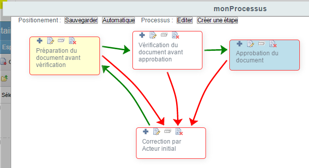
type 'Etape'¶
Un type 'étape' est associé à chaque élément étape du processus indiquant une étape à réaliser par un ou plusieurs utilisateurs.
Il est associé à un ensemble de propriétés paramétrables par le concepteur pour définir les services associés à l'étape. En particulier, une propriété permet d'indiquer les intervenants sur l'étape. Il est toutefois possible de ne pas associer d'intervenant sur l'étape pour ne réaliser que des services automatiquement.
Les étapes sont automatiquement présentées aux utilisateurs concernés en cours d'exécution du processus documentaire.
Un élément étape est représenté dans le modeleur web de processus par une boite de différentes couleurs possibles :
- une boite jaune indique une étape de démarrage du processus documentaire: cette étape est activée dès le lancement du processus,
- une boite bleue indique une étape de fin du processus documentaire: à la suite de cette étape le processus est terminé,
- une boite blanche indique une étape intermédiaire: cette étape est activée quand une ou plusieurs autres étapes ont été réalisées et à la suite de cette étape, une ou plusieurs autres étapes sont lancées,
- une boite jaune, bleue ou blanche entourée de rouge indique que l'étape autorise l'abandon du processus documentaire par un intervenant,
- une boite jaune***, bleue ou blanche non entourée de rouge indique que l'étape n'autorise pas l'abandon du processus documentaire par un intervenant.
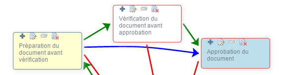
Les icônes suivants sur cette boite étape permettent :
- 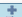\
- l' affichage de propriétés de l'étape,
- \
- l'édition de l'ensemble des propriétés de l'étape,
- 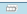\
- la duplication de l'étape avec édition de quelques propriétés de l'étape,
 \
\- la suppression de l'étape après confirmation,
type 'Transition de validation'¶
Un type 'transition de validation' est associé à une ou plusieurs actions utilisateur pour réaliser l'étape conduisant à une validation de l'étape. Ceci permet de faire passer le processus documentaire d'une étape à une autre si les utilisateurs ont 'validé' (ou 'approuvé' ou 'accepté' ou 'révisé' ou 'revu' ou 'préparé' ou ...).
Un élément Transition de validation est représenté dans le modeleur web de processus par une flèche verte.
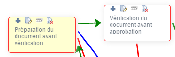
type 'Transition d'abandon'¶
Un type 'transition abandon' est associé à une ou plusieurs actions utilisateur pour réaliser l'étape conduisant à l'abandon du processus.
Dans ce cas, il n'y a pas de transition vers une ou plusieurs étapes mais vers la fin immédiate du processus.
Note: si d'autres étapes parallèles sont en cours elles ne sont pas arrêtées; l'abandon ne se fera donc qu'une fois ces étapes parallèles terminées.
Un élément Transition abandon est représenté dans le modeleur web de processus par un contour rouge de la boite représentant l'étape.
type 'Transition de refus'¶
Un type 'transition de refus' est associé à une ou plusieurs actions utilisateur pour réaliser l'étape conduisant à un refus de l'étape. Ceci permet de faire passer le processus documentaire d'une étape à une autre si les utilisateurs ont 'refusé' (ou 'désapprouvé' ou 'rejeté' ou 'sont en désaccord' ou 'demandé à corriger' ou 'demandé à revoir' ou ...).
Un élément Transition de refus est représenté dans le modeleur web de processus par une flèche rouge.
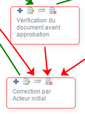
type 'Transition autre'¶
Un type 'transition autre' est associé à une ou des actions utilisateur pour réaliser l'étape conduisant à une sémantique autre que la validation, le refus ou l'abandon sur l'étape. Ceci permet de faire passer le processus documentaire d'une étape à une autre si les utilisateurs ont 'demandé un complément d'information' (ou 'demandé une correction mineure' ou ...).
Un élément Transition autre est représenté dans le modeleur web de processus par une flèche bleue.
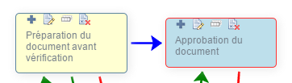
'Branche'¶
Exécution¶
Lors de l'exécution d'un processus, les étapes sont soumises successivement comme modélisées en commençant par les étapes de démarrage.
La soumission d'une étape se fait en 3 phases :
- son initialisation incluant l'assignation de l'étape aux intervenants,
- son déroulement impliquant l'intervention des personnes assignées,
- sa finalisation, une fois que les personnes assignées sont intervenues, impliquant la détermination des étapes suivantes.
Initialisation d'une étape¶
En cours d'exécution d'un processus, l'initialisation d'une étape se fait selon les étapes suivantes:
-
Assignation des intervenants selon les propriétés de l'étape (voir paragraphe 'Assignation des intervenants' ci-après),
-
Exécution des extensions de service contenues dans la propriété 'Service Utilisateur avant les services entrant' de l'étape et du processus,
-
Envoi des emails d'assignation aux intervenants si le service entrant de notification est activé
-
Traitement des documents bureautiques par injection des métadonnées si le service entrant d'injection des métadonnées est activé,
-
Transformation des documents bureautiques en pdf si le service entrant de transformation pdf est activé,
-
Insertion d'une signature électronique dans les documents pdf si le service entrant de signature électronique est activé,
-
Traitement en légalité des documents bureautiques par envoi d'email à la préfecture si le service entrant de contrôle de légalité est activé,
-
Exécution des extensions de service contenues dans la propriété 'Service Utilisateur après les services entrant' de l'étape et du processus,.
Assignation des intervenants¶
Sur une étape, il est possible d'assigner un ou plusieurs intervenants des façons suivantes:
- Le concepteur peut indiquer d'utiliser comme assignés les assignés d'une ou plusieurs autres étapes réalisées précédemment.
- Le concepteur peut indiquer d'utiliser comme assignés les intervenants (les assignés qui ont effectués leur tâche et hors assignés qui ne sont pas intervenus) d'une ou plusieurs autres étapes réalisées précédemment.
- Pour la première étape, le processus peut être lancé en instanciant l'association 'intervenantsInitiaux' du paraphe avec les personnes ou groupes à assigner au départ. Pour les autres étapes, la propriété 'listeIntervenantsSuivants' du paraphe peut être définie.
- Un intervenant, si autorisé, peut choisir lui-même les personnes ou groupes à assigner sur l'étape suivante lorsqu'il réalise son étape.
- Le concepteur du processus peut indiquer sur une étape les personnes ou groupes assignés,
- Le concepteur peut indiquer d'utiliser comme assigné la personne qui a lancé le processus,
- Le concepteur peut indiquer d'utiliser comme assigné le dernier intervenant.
- Le concepteur peut associer, à une étape, des scripts Javascript et/ou classes Java qui vont fournir les intervenants à assigner.
Note:
. Les méthodes sont exploitées dans l'ordre donné ci-dessus. Toutefois, les 2 premières méthodes sont prioritaires par rapport aux 5 méthodes suivantes; si ces 2 méthodes permettent d'avoir au moins un assigné, les 5 méthodes suivantes ne sont pas utilisées. Par contre, si ces 2 méthodes ne permettent pas d'avoir au moins un assigné, les 6 méthodes suivantes sont évaluées successivement et peuvent ajouter des assignés à la liste. La dernière méthode peut compléter ou surcharger toutes les autres méthodes si elle est utilisée.
. Le chapitre sur le service d'assignation explique dans le détail ces différentes méthodes.
. Les méthodes 4, 5 et 8 sont également utilisées pour définir les conseillers d'une demande d'avis, les délégués d'une délégation, les réassignés, les personnes à qui diffuser, les personnes sur lesquels positionner des autorisations particulières.
Si les méthodes d'assignation définies au niveau d'une étape ne permettent pas d'avoir au moins un assigné, l'étape est passée automatiquement en réalisant les services définis sur cette étape (par exemple, transformation pdf, injection de méta-données, signature, ...).
Une fois la liste des assignés établies, des permissions leur sont accordées sur le document. Si la propriété 'Lecture seule' n'est pas activée, des droits en écriture sont établis sur le document et en lecture sur ses parents, ses enfants et les nœuds cibles de ses associations. Si la propriété 'Lecture seule' est activée, des droits en lecture sont établis sur le document, sur ses parents, ses enfants et les nœuds cibles de ses associations.
Déroulement d'une étape¶
-
Lorsqu'un assigné clique sur le bouton de validation (transition de validation) :
-
Historisation de l'action de validation,
-
Envoi d'un email de validation d'étape aux destinataires donnés par la variable 'Service.notification.validation_etape' ou, si vide, par le paramètre 'Service.notification.validation_etape_approuvee' du fichier de configuration 'blueparapheur_configuration.properties' si le service de notification est activé sur l'étape (propriété 'Envoi de notification'),
-
Si mode étape parallèle pour acteur, attente de l'action des autres assignés avant de finaliser l'étape.
-
-
Lorsqu'un assigné clique sur le bouton de refus (transition de refus) :
-
Historisation de l'action de refus,
-
Envoi d'un email de refus d'étape aux destinataires donnés par la variable 'Service.notification.validation_etape' ou, si vide, par le paramètre 'Service.notification.validation_etape_refus' du fichier de configuration 'blueparapheur_configuration.properties' si le service de notification est activé sur l'étape (propriété 'Envoi de notification'),
-
Si mode étape parallèle pour acteur, attente de l'action des autres assignés avant de finaliser l'étape.
-
-
Lorsqu'un assigné clique sur le bouton autre (transition autre) :
-
Historisation de l'action autre,
-
Envoi d'un email de transition autre d'étape aux destinataires donnés par la variable 'Service.notification.validation_etape' ou, si vide, par le paramètre 'Service.notification.validation_etape_autre' du fichier de configuration 'blueparapheur_configuration.properties' si le service de notification est activé sur l'étape (propriété 'Envoi de notification'),
-
si mode étape parallèle pour acteur, attente de l'action des autres assignés avant de finaliser l'étape.
-
-
Lorsqu'un assigné clique sur le bouton d'abandon (transition d'abandon) :
-
Historisation de l'action d'abandon,
-
Envoi d'un email d'abandon d'étape aux destinataires donnés par la variable 'Service.notification.validation_etape' ou, si vide, par le paramètre 'Service.notification.validation_etape_abandon' du fichier de configuration 'blueparapheur_configuration.properties' si le service de notification est activé sur l'étape (propriété 'Envoi de notification'),
-
si mode étape parallèle pour acteur, attente de l'action des autres assignés avant de finaliser l'étape.
-
-
Lorsqu'un assigné clique sur le bouton demande d'avis (service de demande d'avis) :
-
Historisation de l'action de demande d'avis,
-
Envoi d'un email de demande d'avis aux conseillers chosis,
-
Assignation d'une tâche de demande d'avis aux conseillers choisis,
-
Si un des conseillers donne son avis, historisation de l'avis et réassignation de l'étape à l'assigné qui a demandé un avis,
-
si aucun conseiller ne donne d'avis dans un temps défini, historisation du non-avis et réassignation de l'étape à l'assigné qui a demandé un avis.
-
-
Lorsqu'un assigné clique sur le bouton de rechargement des délégués (service de délégation) :
-
Historisation de l'action de rechargement des délégués,
-
Ré-assignation de l'étape à l'assigné, à ses délégués temporaires ou permanents et aux nouveaux délégués définis lors du rechargement des délégués.
-
-
Lorsqu'un assigné clique sur le bouton de réassignation (service de réassignation) :
-
Historisation de l'action de réassignation,
-
Ré-assignation de l'étape aux personnes définis par la réassignation et à leurs délégués temporaires ou permanents.
-
Finalisation d'une étape¶
Lorsqu'une étape a été réalisée - par tous les intervenants si étape parallèle pour les acteurs, par un intervenant si étape non parallèle pour les acteurs -, la finalisation d'une étape se fait selon les étapes suivantes:
-
Si un intervenant a abandonné, abandon du processus suivant les étapes :
-
Exécution des extensions de service contenues dans la propriété 'Service Utilisateur avant les services sortant' de l'étape et du processus si la propriété 'Filtrage de services par transition' est définie pour la transition d'abandon,
-
Mise à jour de l'état du document pour autoriser le lancement de nouveaux processus,
-
Envoi d'un email de fin d'étape sur abandon aux destinataires donnés par la variable 'Service.notification.validation_etape' ou, si vide, par le paramètre 'Service.notification.validation_fin_etape_abandonnee' du fichier de configuration 'blueparapheur_configuration.properties' si le service de notification est activé sur l'étape (propriété 'Envoi de notification'),
-
Exécution des extensions de service contenues dans la propriété 'Service Utilisateur après les services sortant' de l'étape et du processus si la propriété 'Filtrage de services par transition' est définie pour la transition d'abandon,
-
Rétablissement des permissions initiales sur le document telles qu'elles étaient avant le lancement du processus, si la propriété 'Garder les permissions initiales' du processus est activée.
-
-
Si un intervenant a activé la transition 'autre', - quelque soit le choix des autres intervenants en mode parallèle pour les acteurs - :
-
Détermination des étapes suivantes à lancer, celles ayant comme étape Parente de transition 'autre' l'étape qui vient de se finir,
-
Envoi d'un email de fin d'étape sur transition autre aux destinataires donnés par la variable 'Service.notification.validation_etape' ou, si vide, par le paramètre 'Service.notification.validation_fin_etape_autre' du fichier de configuration 'blueparapheur_configuration.properties' si le service de notification est activé sur l'étape (propriété 'Envoi de notification'),
-
Exécution des extensions de service contenues dans la propriété 'Service Utilisateur avant les services sortant' de l'étape et du processus si la propriété 'Filtrage de services par transition' est définie pour la transition autre,
-
Exécution du service de transformation pdf si la propriété 'Filtrage de services par transition' est définie pour la transition autre,
-
Exécution du service de signature électronique si la propriété 'Filtrage de services par transition' est définie pour la transition autre,
-
Exécution des extensions de service contenues dans la propriété 'Service Utilisateur après les services sortant' de l'étape et du processus si la propriété 'Filtrage de services par transition' est définie pour la transition autre,
-
Exécution du service d'autorisation en établissant les permissions sur le document.
-
-
Si plus du quorum (propriété 'Quorum (%) en mode parallèle' de l'étape) des intervenants ont activé la transition d'approbation :
-
Détermination des étapes suivantes à lancer, celles ayant comme étape Parente de transition de Validation l'étape qui vient de se finir,
-
Envoi d'un email de fin d'étape sur transition de validation aux destinataires donnés par la variable 'Service.notification.validation_etape' ou, si vide, par le paramètre 'Service.notification.validation_fin_etape_autre' du fichier de configuration 'blueparapheur_configuration.properties' si le service de notification est activé sur l'étape (propriété 'Envoi de notification'),
-
Envoi d'un email de fin d'étape valide aux personnes données par la propriété 'Diffusé A' de l'étape,
-
Exécution des extensions de service contenues dans la propriété 'Service Utilisateur avant les services sortant' de l'étape et du processus si la propriété 'Filtrage de services par transition' est définie pour la transition de validation,
-
Exécution du service de transformation pdf si la propriété 'Filtrage de services par transition' est définie pour la transition de validation,
-
Exécution du service de signature électronique si la propriété 'Filtrage de services par transition' est définie pour la transition de validation,
-
Exécution des extensions de service contenues dans la propriété 'Service Utilisateur après les services sortant' de l'étape et du processus si la propriété 'Filtrage de services par transition' est définie pour la transition de validation,
-
Exécution du service d'autorisation en établissant les permissions sur le document.
-
-
Si plus du quroum (propriété 'Quorum (%) en mode parallèle' de l'étape) des intervenants ont activé la transition de refus :
-
Détermination des étapes suivantes à lancer, celles ayant comme étape Parente de transition de Refus l'étape qui vient de se finir,
-
Envoi d'un email de fin d'étape sur transition de refus aux destinataires donnés par la variable 'Service.notification.validation_etape' ou, si vide, par le paramètre 'Service.notification.validation_fin_etape_autre' du fichier de configuration 'blueparapheur_configuration.properties' si le service de notification est activé sur l'étape (propriété 'Envoi de notification'),
-
Exécution des extensions de service contenues dans la propriété 'Service Utilisateur avant les services sortant' de l'étape et du processus si la propriété 'Filtrage de services par transition' est définie pour la transition de refus,
-
Exécution du service de transformation pdf si la propriété 'Filtrage de services par transition' est définie pour la transition de refus,
-
Exécution du service de signature électronique si la propriété 'Filtrage de services par transition' est définie pour la transition de refus,
-
Exécution des extensions de service contenues dans la propriété 'Service Utilisateur après les services sortant' de l'étape et du processus si la propriété 'Filtrage de services par transition' est définie pour la transition de refus,
-
Exécution du service d'autorisation en établissant les permissions sur le document.
-
-
Si l'étape a des étapes suivantes, initialisation des étapes suivantes
-
Si l'étape n'a pas d'étape suivante, fin du processus :
-
Exécution des extensions de service contenues dans la propriété 'Service Utilisateur avant les services entrant' de l'étape abandon (cette étape est créée automatiquement si non présente au premier lancement du processus),
-
Si abandon, envoi d'un email de fin de processus sur abandon aux responsable du document,
-
Si validation :
-
Initialise les accusés de réception des personnes listées dans la propriété 'Diffusé A' du processus si le service d'accusé réception est activé,
-
Rétablissement des permissions initiales sur le document telles qu'elles étaient avant le lancement du processus, si la propriété 'Garder les permissions initiales' du processus est activée,
-
Exécution du service d'autorisation en établissant les permissions en lecture sur le document pour les personnes listées dans les propriétés 'Consultable Par' et 'Diffusé A' du processus.,
-
Exécution du service d'autorisation en établissant les permissions en écriture sur le document pour les personnes listées dans la propriétés 'Modifiable Par' du processus,
-
Mise à jour de l'état du document pour autoriser les demandes de modification ou la mise en révision si le service de demande de modification a été activée sur le processus; sinon, autoriser l'archivage et la suppression du document,
-
Envoi d'un email de validation de processus aux personnes listées dans la propriété 'Diffusé A' du processus si le service de notification est activé.
-
-
Création d'un processus documentaire¶
Introduction & Démarrage¶
Ce chapitre décrit de façon pratique les étapes successives de création et mise à disposition d'un processus documentaire.
La création d'un processus documentaire est réservée aux membres 'Gestionnaire de site' et 'Collaborateur' du site Share 'Processus documentaire Blue Processus' que vous avez créé à l'installation de Blue Processus.
Les collaborateurs du site sont des fonctionnels métier ayant une connaissance fonctionnelle approfondie du processus documentaire à mettre en œuvre. Dans le cas où vos processus documentaires nécessitent des adaptations techniques (par exemple, l'accès à un service externe), les collaborateurs doivent également être des informaticiens connaissant les langages Java et/ou Javascript.
Pour lancer l'environnement de conception de Blue Processus, procéder comme suit :
-
Ouvrer votre navigateur web,
-
Charger la page '<http ou https>://<votre serveur>:<votre port>/share'
-
Connectez-vous avec un compte 'Gestionnaire de site' ou 'Collaborateur' du site 'Processus documentaire Blue Processus'
-
Dans la dashlet 'Mes Sites' de votre tableau de bord personnel qui s'affiche, cliquez sur le nom du site 'Processus documentaire Blue Processus'
-
Cliquer sur l'onglet 'Espace documentaire' du site 'Processus documentaire Blue Processus'
-
Dans le filtre 'Fichiers' à gauche, ouvrer l'arbre et cliquer sur 'Processus'
Le contenu du répertoire dans lequel les processus documentaires sont créés est affiché à droite.
Création d'un processus¶
Dans ce chapitre nous procédons à la création de l'élément 'Processus' qui va contenir tous les autres éléments de votre processus.
- Si le répertoire 'cm_content' n'existe pas, créez-le en utilisant le bouton 'Nouveau Dossier' Ce répertoire va contenir les processus documentaires qui sont disponibles pour les documents fichiers.
Note:
Si nous souhaitons créer un processus disponible pour des répertoires, nous aurions créé le répertoire 'cm_folder'.
Si vous souhaitez créer un processus documentaire pour vos délibérations et que vos délibérations sont caractérisées dans Alfresco par le type 'macompagnie:Deliberation', vous devez créer le répertoire 'macompagnie_Deliberation'.
Par défaut, Blue Processus a configuré le portail Share pour choisir les processus en fonction du type de document. Evidemment, ceci peut être changé : c'est ce que précise le chapitre 'Gestion et déploiement de processus documentaires'.
-
Cliquer sur le nom du répertoire 'cm_content'
-
Cliquer sur l'action 'Créer un Processus'
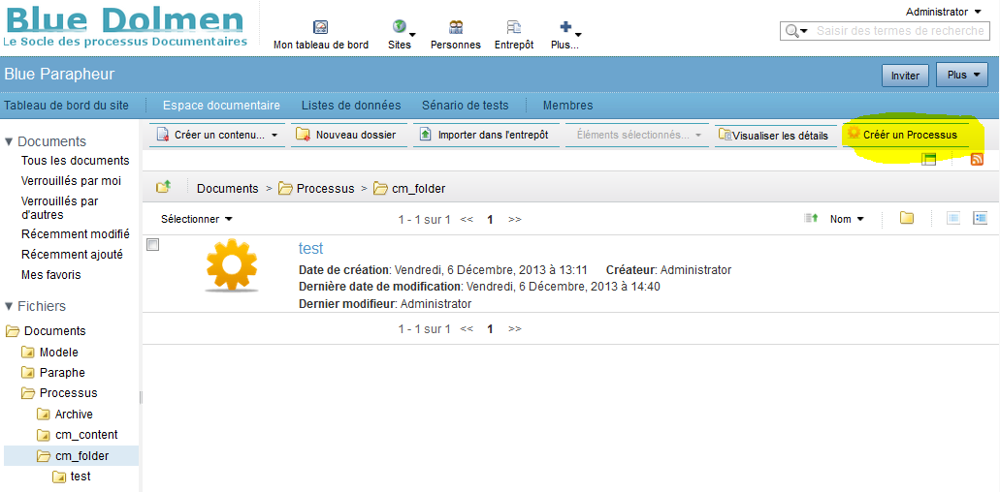
- Le formulaire de création d'un processus s'affiche et vous permet d'entrer les propriétés de l'élément 'Processus':
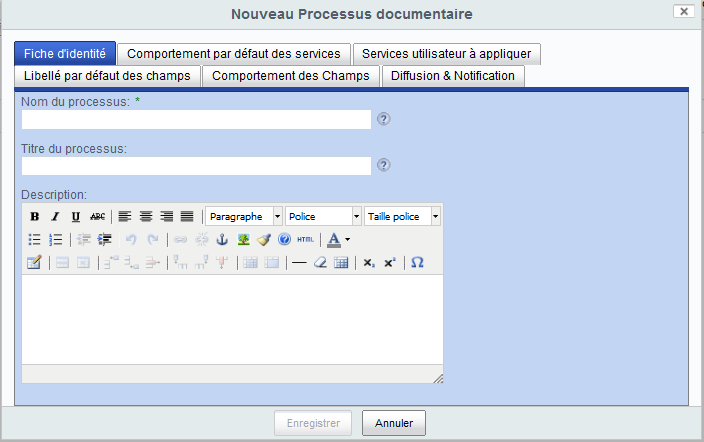
Note:
. Les champs dont le titre est suffixé par une étoile sont obligatoires.
. Quand vous cliquez sur le point d'interrogation à droite du champ ou quand vous laissez la souris sur le champ, une aide à la saisie apparaît.
Onglet 'Fiche d'identité'¶
Description¶
Le premier onglet du formulaire de processus permet d'entrer les propriétés générales:
-
'Nom du processus' : cette propriété est obligatoire et permet d'identifier de façon unique le processus.
-
'Titre du processus' : cette propriété permet de préciser par un texte court les objectifs du processus.
-
'Description du processus' : cette propriété permet de décrire en détail du processus.
Ces 3 champs sont utilisés dans la documentation générée du processus.
Le titre du processus apparaît sur le formulaire de tâche qui est soumis à chaque intervenant quand le processus est en cours d'exécution.
Action¶
-
Entrer pour nom 'monProcessus'
-
Entrer pour titre 'titre de monProcessus'
-
Cliquer sur l'onglet 'Comportement par défaut des services'
Onglet 'Comportement par défaut des services'¶
Description¶
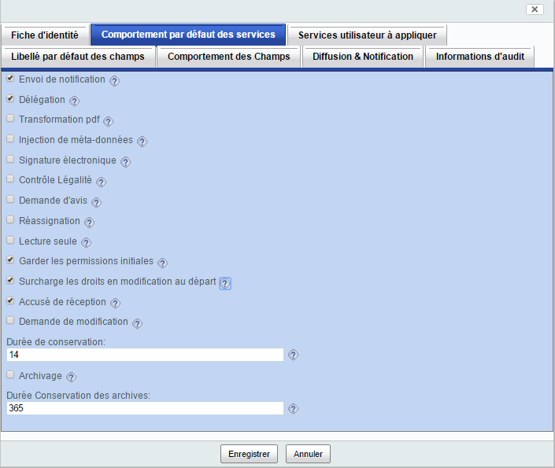
Cet onglet permet de configurer le comportement par défaut des services sur les étapes qui vont être affectées aux intervenants : cette configuration est seulement par défaut et peut être surchargée au niveau de chaque étape. D'autre part, chacun de ces services peut avoir une configuration spécifique qui peut être adaptée à vos besoins comme expliqué dans le chapitre 'Configuration des services'.
Les services proposés sont :
Service de Notification & Alerte¶
Le service de Notification & Alerte permet de notifier certains utilisateurs par email.
Si La propriété 'Envoi de notification' est cochée, des notifications par email seront envoyées par défaut avant et après chaque étape et pendant une étape si des relances sont nécessaires.
L'indication 'par défaut' signifie que chaque étape peut changer ce comportement défini au niveau du processus.
Le type d'email envoyé et le contenu des emails sont entièrement paramétrables comme expliqué dans le chapitre 'Configuration des services -> Service de notification'.
Service de Délégation/Suppléance¶
Le service de Délégation/Suppléance permet de déléguer des étapes à d'autres personnes qui n'étaient pas déclarées comme assignées sur l'étape.
On parle de 'Délégation' quand un assigné choisit lui-même ses délégués (par exemple, quand il part en vacances pour une délégation temporaire ou un directeur délègue à son assistant pour une délégation permanente).
On parle de 'Suppléance' quand des personnes ayant autorité vont choisir pour une personne ses suppléants (par exemple, les suppléants d'un président de conseil).
Si La propriété 'Délégation' est cochée, les délégués ou suppléants qui sont associés à un intervenants se verront assigner par défaut la tâche de cette intervenant.
Si un de ces délégués ou suppléants effectue la tâche de l'intervenant, il est explicitement historisé qu'il a réalisé la tâche au nom de l'intervenant.
Si la propriété 'Délégation d'étape' est cochée, l'onglet 'Délégation' sur les formulaires de tâche est proposés par défaut aux intervenants pour qu'ils puissent des délégués juste pour l'étape et/ou pour qu'ils puissent assigner à l'étape des délégués qu'ils ont récemment ajoutés.
Service de Transformation pdf¶
Le service de Transformation pdf crée une copie pdf des documents impliqués dans le processus (le document lui-même s'il s'agit d'un fichier, les fichiers contenus dans le document s'il s'agit d'un répertoire) pour les documents dont le type mime supporte des transformations pdf (par défaut, les fichiers bureautiques MS Office, Open Office et Libre Office).
Si La propriété 'Transformation pdf' est cochée, avant et après chaque étape, le service de Transformation pdf est mis en œuvre par défaut.
Service d'historisation certifiée¶
Le service de Document d'Historisation certifiée génère un fichier PDF/A signé contenant l'historique du processus documentaire sur le document.
Service de Signature électronique¶
Le service de Signature électronique appose une signature électronique par lot dans les fichiers pdf impliqués dans le processus (le document lui-même s'il s'agit d'un fichier, les fichiers contenus dans le document s'il s'agit d'un répertoire).
Si La propriété 'Signature électronique' est cochée, sur chaque étape, le service de Signature électronique est mis en œuvre par défaut après que l'étape soit réalisée par les intervenants.
Note: activer le service de signature électronique sur le processus n'a réellement de sens que si le processus est constitué uniquement d'étapes d'approbation successives nécessistant une signature électronique à chaque fois. Sinon, il est préférable de ne pas l'activer au niveau du processus mais de gérer ça au niveau des étapes concernées.
Service de Contrôle de légalité¶
Le service de Contrôle de légalité assure l'envoi à la préfecture des documents pdf impliqués dans le processus (voir http://www.collectivites-locales.gouv.fr/controle-legalite-1 et ACTES Aide au Contrôle de légaliTé dématErialiSé).
Si La propriété 'Contrôle légalité' est cochée, après chaque étape, une procédure de contrôle de légalité est lancée. Elle se passe en 3 étapes:
-
La première étape prépare sous forme zippée les documents à envoyer au contrôle de légalité.
-
La seconde étape envoie un email avec le fichier zippé attaché à l'adresse de la préfecture et une tâche est assignée à la personne qui doit recevoir l'email de retour de la préfecture.
-
La troisième étape est réalisée par cette personne qui sur réception de l'email de la préfecture fait un renvoi si complément d'information ou passe à l'étape suivante si acceptation par la préfecture.
Note: activer le service de contrôle de légalité sur le processus n'a réellement de sens que si le processus est constitué d'une seule étape impliquant un contrôle de légalité ou si vous souhaitez suivre l'envoi successif au contrôle de légalité d'un lot de documents. Sinon, il est préférable de ne pas l'activer et de gérer ça au niveau des étapes concernées.
Service de Demande d'avis¶
Le service de Demande d'avis permet à un intervenant sur une étape de demander un avis à d'autres personnes avant de réaliser sa tâche.
Si La propriété 'Demande d'avis' est cochée, sur chaque étape, une demande d'avis est proposée aux intervenants sur le formulaire de tâche (Onglet 'Demande Avis') : cette demande d'avis leur permet de soumettre leur tâche de validation pour avis à une ou plusieurs personnes; ces dernières peuvent donner un avis favorable, un avis défavorable ou pas d'avis en laissant un commentaire et/ou des fichiers contenant leurs commentaires.
Si au bout d'une période paramétrable, ces personnes n'ont pas transmis d'avis, un avis "sans opinion" est automatiquement envoyé à l'intervenant ayant initié la demande d'avis.
Service de Réassignation¶
Le service de Réassignation permet à un intervenant sur une étape d'assigner sa tâche à une ou plusieurs personnes qu'elles considèrent plus compétentes ou disponibles.
Si La propriété 'Réassignation' est cochée, sur chaque étape, une Réassignation est proposée aux intervenants sur le formulaire de tâche (Onglet 'Réassignation').
Service d'Autorisation¶
Le service d'Autorisation se décompose en plusieurs propriétés permettant une gestion fine des permissions tout au long du processus.
Cette gestion des autorisations pourra être gérée encore plus finement au niveau de chaque étape.
Si La propriété 'Lecture seule' est cochée, avant chaque étape, les intervenants qui n'ont pas de permissions sur le document avant leur assignation à une étape du processus n'ont par défaut accès au document qu'en lecture seule et ne peuvent donc pas éditer ni mettre à jour son contenu. Si la propriété n'est pas cochée, ils ont des permissions d'éditeur sur le document. Les intervenants qui avaient déjà des permissions sur le document gardent ses permissions et se voient en plus appliquer des permissions d'édition si cette propriété n'est pas cochée.
Si La propriété 'Garder les permissions initiales' est cochée, les permissions appliquées sur le document sont conservées au lancement du processus et seront ré-appliquées sur le document à la fin du processus; avant qu'elles ne soient ré-appliquées, les permissions posées pendant le déroulement du processus sont retirées; après qu'elles aient été ré-appliquées, les permissions de diffusion (cf Onglet 'Diffusion & Notification') sont appliquées.
Si La propriété 'Surcharge les droits en modification au départ' est cochée, les permissions d'édition du document sont retirées au lancement du processus.
Note: Les droits peuvent être donnés à d'autres au chargement de la première étape par un travail d'intégration d'un script positionnant les permissions sur des associations du nœud paraphe associé au document (voir 'Configuration des Services').*
Service d'Accusé de réception¶
Le service d'Accusé réception est un service post-processus qui est mis en œuvre pour tracer les accès par certains utilisateurs à un document une fois qu'il est sorti d'un processus documentaire.
Si La propriété 'Accusé de réception' est cochée, lorsqu'un utilisateur, qui a été notifié de la validation du document à l'issue du processus documentaire (cf onglet 'Diffusion & Notification'), accéde au document (par exemple via la page de détails Share du document s'il s'agit d'un fichier ou via la page de détails Share d'un de ces fichiers s'il s'agit d'un répertoire), un accusé de réception est enregistré pour cet utilisateur.
Cet accusé de réception est listé sous la forme d'entrée dans un tableau présent sur la page de détail Share du document. Ce tableau contient également des entrées correspondant aux actions réalisées du processus documentaire par les intervenants.
Un bouton de Prise de connaissance explicite est également proposée à l'utilisateur sur cette page de détails.
Service de Demande de modification¶
Le service de Demandes de modification est un service post-processus qui est mis en œuvre si la propriété 'Demande de modification' est cochée pour permettre à des utilisateurs autorisés (ceux à qui le document aura été diffusé - cf onglet 'Diffusion & Notification') de :
-
faire des demandes de modification sur le document étant sorti du processus documentaire: dans ce cas, les demandes sont soumises au propriétaire du document qui peut les accepter ou les refuser.
-
mettre en révision le document : dans ce cas, le document est éditable et un processus documentaire peut être relancer sur le document pour une nouvelle validation.
-
archiver le document : dans ce cas, le document est conservé dans un espace d'archive; au bout d'une période paramétrable, il est supprimé.
Service d'Archivage des données du processus¶
Ce service d'Archivage des données du processus est un service post-processus qui est mis en œuvre pour gérer sur le temps les données des processus documentaires réalisés. de :
Si La propriété 'Durée de conservation' contient une durée en jour supérieure à 0, les données d'un processus documentaire sont supprimées à l'issue de cette durée après que le document sur lequel a été réalisé le processus a été supprimé.
Si La propriété 'Archivage' est cochée, lorsqu'un document ayant déjà été validé repart dans un processus documentaire, la version précédente des données de processus est envoyée dans l'espace Archive du site 'Procesuss documentaires Blue Processus'.
Si La propriété 'Durée Conservation des archives' contient une durée en jour supérieure à 0, les données d'un processus documentaire archivé (de l'espace Archive du site 'Procesuss documentaires Blue Processus') sont supprimées à l'issue de cette durée après que le document sur lequel a été réalisé le processus a été supprimé.
Action¶
- Cliquer sur l'onglet 'Libellé par défaut des champs'
Onglet 'Libellé par défaut des champs'¶
Description¶
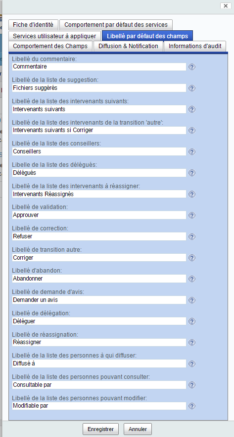
Cet onglet permet de changer le libellé des champs qui sont affichés à l'utilisateur sur le formulaire de tâche quand il aura à effectuer une tâche.
Par exemple, si vous préférez plutôt parler de validation que d'approbation, vous pouvez changer le libellé du bouton 'Approuver' par 'Valider'; ou bien si la sémantique de votre application est relative à de la diffusion, le verbe 'Diffuser' sera encore plus adapté.
Ceci permet de paramétrer dynamiquement les libellés des éléments du formulaire de tâche proposé aux intervenants.
Chaque propriété et leur correspondance avec le champ du formulaire de tâche sont :
-
'Libellé du commentaire' pour le libellé du champ de saisie texte 'Commentaire' qui apparaît sur l'onglet 'Ma tâche' du formulaire de tâche,
-
'Libellé de la liste de suggestion' pour le libellé de la liste de sélection de fichier 'Fichiers suggérés' qui apparaît sur l'onglet 'Ma tâche' du formulaire de tâche,
-
'Libellé de la liste des intervenants suivants' pour le libellé de la liste de sélection de personnes 'Intervenants suivants' qui apparaît sur l'onglet 'Ma tâche' du formulaire de tâche,
-
'Libellé de la liste des intervenants de la transition 'autre'' pour le libellé de la liste de sélection de personnes 'Intervenants suivants si Corriger' qui apparaît sur l'onglet 'Ma tâche' du formulaire de tâche,
-
'Libellé de la liste des conseillers' pour le libellé de la liste de sélection de personnes 'Conseillers' qui apparaît sur l'onglet "Demande d'avis" du formulaire de tâche,
-
'Libelle de la liste des délégués' pour le libellé de la liste de sélection de personnes 'Délégués' qui apparaît sur l'onglet "Délégation" du formulaire de tâche,
-
'Libellé de la liste des intervenants à réassigner' pour le libellé de la liste de sélection de personnes 'Intervenants Réassignés' qui apparaît sur l'onglet "Réassignation" du formulaire de tâche,
-
'Libellé de validation' pour le libellé du bouton de la transition de validation 'Approuver' qui apparaît sur l'onglet 'Ma tâche' du formulaire de tâche,
-
'Libellé de refus' pour le libellé du bouton de la transition de refus 'Refuser' qui apparaît sur l'onglet 'Ma tâche' du formulaire de tâche,
-
'Libellé de transition autre' pour le libellé du bouton de la transition autre 'Corriger' qui apparaît sur l'onglet 'Ma tâche' du formulaire de tâche - et dont la sémantique est ouverte -,
-
'Libellé d'abandon' pour le libellé du bouton de la transition d'abandon 'Abandonner' qui apparaît sur l'onglet 'Ma tâche' du formulaire de tâche,
-
'Libellé de demande d'avis' pour le libellé du bouton de la transition de demande d'avis 'Demander un avis' qui apparaît sur l'onglet 'Demande Avis' du formulaire de tâche,
-
'Libellé de délégation' pour le libellé du bouton de la transition de délégation 'Déléguer' qui apparaît sur l'onglet 'Délégation' du formulaire de tâche,
-
'Libellé de réassignation' pour le libellé du bouton de la transition de réassignation 'Réassigner' qui apparaît sur l'onglet 'Réassignation' du formulaire de tâche,
-
'Libellé de la liste des personnes à qui diffuser' pour le libellé de la liste des personnes à qui diffuser en fin de processus 'Diffusé à' qui apparaît sur l'onglet 'Diffusion' du formulaire de tâche,
-
'Libellé de la liste des personnes pouvant consulter' pour le libellé de la liste des personnes autorisées en consultation en fin de processus 'Consultable par' qui apparaît sur l'onglet 'Diffusion' du formulaire de tâche,
-
'Libellé de la liste des personnes pouvant modifier' pour le libellé de la liste des personnes autorisées en modification en fin de processus 'Modifiable par' qui apparaît sur l'onglet 'Diffusion' du formulaire de tâche,
Note: la suite du document utilise les libellé par défaut ci-dessus pour référencer les champs du formulaire.
Action¶
- Cliquer sur l'onglet 'Comportement des champs'
Onglet 'Comportement des champs'¶
Description¶
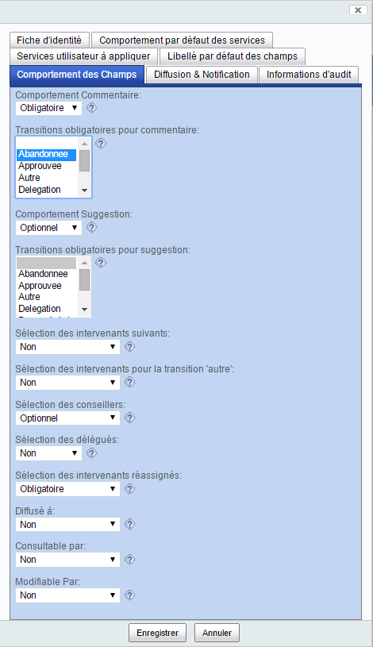
Cet onglet permet de paramétrer le comportement par défaut des champs et des boutons constituant le formulaire de tâche qui sera présenté à chaque intervenant d'une étape du processus.
Comportement Commentaire¶
Vous pouvez associer à la propriété Comportement Commentaire la valeur :
-
'Non' si le champ de commantaire 'Commentaire' ne doit pas être disponible par défaut sur le formulaire de tâche;
-
'Optionnel', si le champ est présent et peut éventuellement être renseigné par l'utilisateur;
-
'Obligatoire', si le champ est présent et doit être renseigné pour activer les boutons sélectionnés dans la propriété ci-dessous 'Transitions obligatoires pour Commentaire'.
Transitions obligatoires pour Commentaire¶
Cette propriété à multiple valeurs possibles (via le maintien de la touche 'CTRL') permet de sélectionner les boutons du formulaire de tâche qui doivent être invalidés tant que l'utilisateur n'a pas renseigné de texte dans le champ de saisie 'Commentaire' du formulaire de tâche si la propriété ci-avant 'Comportement Commentaire' est 'Obligatoire'.
Les boutons qui peuvent être invalidés en fonction des valeurs de transitions sont :
-
'Abandonnee' pour le bouton 'Abandonner' qui apparaît sur l'onglet 'Ma tâche' du formulaire de tâche,
-
'Approuvee' pour le bouton 'Approuver' qui apparaît sur l'onglet 'Ma tâche' du formulaire de tâche,
-
'Autre' pour le bouton 'Corriger' qui apparaît sur l'onglet 'Ma tâche' du formulaire de tâche,
-
'Delegation' pour le bouton 'Déléguer' qui apparaît sur l'onglet 'Délégation' du formulaire de tâche,
-
'DemandeAvis' pour le bouton 'Abandonner' qui apparaît sur l'onglet 'Demande Avis' du formulaire de tâche,
-
'Reassigne' pour le bouton 'Réassigner' qui apparaît sur l'onglet 'Réassignation' du formulaire de tâche,
-
'Refusee' pour le bouton 'Refuser' qui apparaît sur l'onglet 'Ma tâche' du formulaire de tâche,
Comportement Suggestion¶
Vous pouvez associer à la propriété Comportement Suggestion la valeur :
-
'Non' si la liste de chargement de fichiers suggérés 'Fichiers suggérés' ne doit pas être disponible par défaut sur le formulaire de tâche;
-
'Optionnel', si la liste est présente et peut éventuellement être renseignée par l'utilisateur;
-
'Obligatoire', si la liste est présente et doit être renseignée pour activer les boutons sélectionnés dans la propriété ci-dessous 'Transitions obligatoires pour suggestion'.
Transitions obligatoires pour Suggestion¶
Cette propriété à multiple valeurs possibles (via le maintien de la touche 'CTRL') permet de sélectionner les boutons du formulaire de tâche qui doivent être invalidés tant que l'utilisateur n'a pas chargé au moins un fichier suggéré via la liste de chargement de fichiers suggérés 'Fichiers suggérés' du formulaire de tâche si la propriété ci-avant 'Comportement Suggestion' est 'Obligatoire'.
Les boutons qui peuvent être invalidés en fonction des valeurs de transitions sont les même que pour la propriété 'Transitions obligatoires pour Commentaire'
Sélection des intervenants suivants¶
La sélection des intervenants suivants permet à un intervenant d'assigner sur l'étape suivante une liste de personnes qu'il a lui-même choisi lorsqu'il approuve l'étape courante (bouton 'Approuver'). Si cette sélection n'est pas proposée pour l'intervenant, d'autres méthodes sont disponibles comme celles décrites dans les parties 'Conception -> Structure d'un processus documentaire' 'Configuration -> Service Assignation'.
Vous pouvez associer à la propriété Sélection des intervenants suivants la valeur :
-
'Non' si la liste de sélection de personnes/groupes 'Intervenants Suivants' ne doit pas être disponible par défaut sur le formulaire de tâche;
-
'Optionnel', si la liste est présente et peut éventuellement être renseignée par l'utilisateur;
-
'OptionnelPersonne', si la liste est présente, peut éventuellement être renseignée par l'utilisateur mais seulement des personnes sont sélectionnables (pas de groupe);
-
'OptionnelGroupe', si la liste est présente, peut éventuellement être renseignée par l'utilisateur mais seulement des groupes sont sélectionnables (pas de personne);
-
'Obligatoire', si la liste est présente et doit être renseignée pour pouvoir activer le bouton 'Approuver'.
-
'ObligatoirePersonne', si la liste est présente et doit être renseignée avec des personnes (pas de groupe) pour pouvoir activer le bouton 'Approuver';
-
'ObligatoireGroupe', si la liste est présente et doit être renseignée avec des groupes (pas de personne) pour pouvoir activer le bouton 'Approuver';
Sélection des intervenants suivants pour la transition autre¶
La sélection des intervenants suivants pour la transition autre permet à un intervenant d'assigner sur l'étape suivante une liste de personnes qu'il a lui-même choisi lorsqu'il active la transition autre sur l'étape courante (bouton 'Corriger'). Si cette sélection n'est pas proposée pour l'intervenant, d'autres méthodes sont disponibles comme celles décrites dans les parties 'Conception -> Structure d'un processus documentaire' 'Configuration -> Service Assignation'.
Vous pouvez associer à la propriété Sélection des intervenants suivants pour la transition autre la valeur :
-
'Non' si la liste de sélection de personnes/groupes 'Intervenants suivants si Corriger' ne doit pas être disponible par défaut sur le formulaire de tâche;
-
'Optionnel', si la liste est présente et peut éventuellement être renseignée par l'utilisateur;
-
'OptionnelPersonne', si la liste est présente, peut éventuellement être renseignée par l'utilisateur mais seulement des personnes sont sélectionnables (pas de groupe);
-
'OptionnelGroupe', si la liste est présente, peut éventuellement être renseignée par l'utilisateur mais seulement des groupes sont sélectionnables (pas de personne);
-
'Obligatoire', si la liste est présente et doit être renseignée pour pouvoir activer le bouton 'Corriger'.
-
'ObligatoirePersonne', si la liste est présente et doit être renseignée avec des personnes (pas de groupe) pour pouvoir activer le bouton 'Corriger';
-
'ObligatoireGroupe', si la liste est présente et doit être renseignée avec des groupes (pas de personne) pour pouvoir activer le bouton 'Corriger';
Sélection des conseillers¶
La sélection des conseillers permet à un intervenant de sélectionner des personnes ou des groupes sur le formulaire de tâche pour leur demander un avis dès qu'il active le bouton 'Demander un avis'.
Si cette propriété est optionnelle, la liste de sélection des conseillers du formulaire de tâche est pré-remplie
si le concepteur du processus a pré-sélectionné
des personnes en utilisant la propriété 'Conseillers prédéfinis' de l'étape courante.
Note: même si l'assigné enlève de la liste de sélection les conseillers pré-définis, la demande d'avis leur sera soumise.
Vous pouvez associer à la propriété Sélection des conseillers la valeur :
-
'Non' si la liste de sélection de personnes 'Conseillers' ne doit pas être disponible par défaut sur le formulaire de tâche;
-
'Optionnel', si la liste est présente et peut éventuellement être renseignée par l'utilisateur;
-
'OptionnelPersonne', si la liste est présente, peut éventuellement être renseignée par l'utilisateur, mais seulement des personnes sont sélectionnables (pas de groupe);
-
'OptionnelGroupe', si la liste est présente, peut éventuellement être renseignée par l'utilisateur, mais seulement des groupes sont sélectionnables (pas de personne);
-
'Obligatoire', si la liste est présente et doit être renseignée pour pouvoir activer le bouton 'Demander un avis'.
-
'ObligatoirePersonne', si la liste est présente et doit être renseignée avec des personnes (pas de groupe) pour pouvoir activer le bouton 'Demander un avis';
-
'ObligatoireGroupe', si la liste est présente et doit être renseignée avec des groupes (pas de personne) pour pouvoir activer le bouton 'Demander un avis';
Sélection des délégués¶
La sélection des délégués permet à un intervenant de choisir des délégués ou suppléants via le formulaire de tâche pour que l'étape en cours leur soit assignée dès qu'il active le bouton 'Recharger les délégués'.
Ces délégués sélectionnés ne sont délégués que le temps de l'étape à moins qu'ils ne soient déjà des délégués temporaires ou permanents de l'intervenant (voir 'Configuration des services').
Si cette propriété est optionnelle, la liste de sélection des délégués du formulaire de tâche peut être pré-remplie
si le concepteur du processus a pré-sélectionné
des personnes en utilisant la propriété 'Délégués prédéfinis' de l'étape courante.
Note: même si l'assigné enlève de la liste de sélection les délégués pré-définis, la délégation leur sera appliquée.
Vous pouvez associer à la propriété Sélection des délégués la valeur :
-
'Non' si la liste de sélection de personnes 'Délégués' ne doit pas être disponible par défaut sur le formulaire de tâche;
-
'Optionnel', si la liste est présente et peut éventuellement être renseignée par l'utilisateur;
-
'Obligatoire', si la liste est présente et doit être renseignée pour pouvoir activer le bouton 'Recharger les délégués'.
Sélection des intervenants réassignés¶
La sélection des intervenants réassignés permet à un intervenant de choisir des personnes ou groupes via le formulaire de tâche pour que l'étape en cours leur soit ré-assignée dès qu'il active le bouton 'Réassigner' sur l'onglet 'Réassignation'. Suite à la réassignation, l'intervenant n'a plus cette tâche sur l'étape.
Si la sélection n'est pas proposée pour l'intervenant ou n'est pas obligatoire mais le service de réassignation est activable, le concepteur a directement sélectionné des intervenants réassignés au niveau conception du processus.
Vous pouvez associer à la propriété Sélection des intervenants réassignés la valeur :
-
'Non' si la liste de sélection de personnes/groupes 'Intervenants Réassignés' ne doit pas être disponible par défaut sur le formulaire de tâche;
-
'Optionnel', si la liste est présente et peut éventuellement être renseignée par l'utilisateur;
-
'OptionnelPersonne', si la liste est présente, peut éventuellement être renseignée par l'utilisateur, mais seulement des personnes sont sélectionnables (pas de groupe);
-
'OptionnelGroupe', si la liste est présente, peut éventuellement être renseignée par l'utilisateur, mais seulement des groupes sont sélectionnables (pas de personne);
-
'Obligatoire', si la liste est présente et doit être renseignée pour pouvoir activer le bouton 'Réassigner'.
-
'ObligatoirePersonne', si la liste est présente et doit être renseignée avec des personnes (pas de groupe) pour pouvoir activer le bouton 'Réassigner';
-
'ObligatoireGroupe', si la liste est présente et doit être renseignée avec des groupes (pas de personne) pour pouvoir activer le bouton 'Réassigner';
Diffusé à¶
Cette liste de sélection de personne ou groupe sur le formulaire de tâche permet à l'intervenant de sélectionner les personnes qui vont recevoir à l'issue de l'étape un email indiquant le passage de l'étape.
Si la sélection n'est pas proposée pour l'intervenant, des personnes ou groupes peuvent être pré-sélectionné sur chaque étape par le concepteur du processus.
Vous pouvez associer à la propriété Diffusé à la valeur :
-
'Non' si la liste de sélection de personnes/groupes 'Diffusé à' ne doit pas être disponible par défaut sur le formulaire de tâche;
-
'Optionnel', si la liste est présente et peut éventuellement être renseignée par l'utilisateur;
-
'OptionnelPersonne', si la liste est présente, peut éventuellement être renseignée par l'utilisateur, mais seulement des personnes sont sélectionnables (pas de groupe);
-
'OptionnelGroupe', si la liste est présente, peut éventuellement être renseignée par l'utilisateur, mais seulement des groupes sont sélectionnables (pas de personne);
-
'Obligatoire', si la liste est présente et doit être renseignée pour pouvoir activer le bouton 'Approuver'.
-
'ObligatoirePersonne', si la liste est présente et doit être renseignée avec des personnes (pas de groupe) pour pouvoir activer le bouton 'Approuver';
-
'ObligatoireGroupe', si la liste est présente et doit être renseignée avec des groupes (pas de personne) pour pouvoir activer le bouton 'Approuver';
Consultable par¶
Cette liste de sélection de personne ou groupe sur le formulaire de tâche permet à l'intervenant de sélectionner les personnes qui vont avoir un accès en lecture à l'issue de l'étape sur le document.
Si la sélection n'est pas proposée pour l'intervenant, des personnes ou groupes peuvent être pré-sélectionné sur chaque étape par le concepteur du processus.
Vous pouvez associer à la propriété Consultable par la valeur :
-
'Non' si la liste de sélection de personnes/groupes 'Consultable par' ne doit pas être disponible par défaut sur le formulaire de tâche;
-
'Optionnel', si la liste est présente et peut éventuellement être renseignée par l'utilisateur;
-
'OptionnelPersonne', si la liste est présente, peut éventuellement être renseignée par l'utilisateur, mais seulement des personnes sont sélectionnables (pas de groupe);
-
'OptionnelGroupe', si la liste est présente, peut éventuellement être renseignée par l'utilisateur, mais seulement des groupes sont sélectionnables (pas de personne);
-
'Obligatoire', si la liste est présente et doit être renseignée pour pouvoir activer le bouton 'Approuver'.
-
'ObligatoirePersonne', si la liste est présente et doit être renseignée avec des personnes (pas de groupe) pour pouvoir activer le bouton 'Approuver';
-
'ObligatoireGroupe', si la liste est présente et doit être renseignée avec des groupes (pas de personne) pour pouvoir activer le bouton 'Approuver';
Modifiable par¶
Cette liste de sélection de personne ou groupe sur le formulaire de tâche permet à l'intervenant de sélectionner les personnes qui vont avoir un accès en écriture à l'issue de l'étape sur le document.
Si la sélection n'est pas proposée pour l'intervenant, des personnes ou groupes peuvent être pré-sélectionné sur chaque étape par le concepteur du processus.
Vous pouvez associer à la propriété Modifiable par la valeur :
-
'Non' si la liste de sélection de personnes/groupes '*Modifiable par' ne doit pas être disponible par défaut sur le formulaire de tâche;
-
'Optionnel', si la liste est présente et peut éventuellement être renseignée par l'utilisateur;
-
'OptionnelPersonne', si la liste est présente, peut éventuellement être renseignée par l'utilisateur, mais seulement des personnes sont sélectionnables (pas de groupe);
-
'OptionnelGroupe', si la liste est présente, peut éventuellement être renseignée par l'utilisateur, mais seulement des groupes sont sélectionnables (pas de personne);
-
'Obligatoire', si la liste est présente et doit être renseignée pour pouvoir activer le bouton 'Approuver'.
-
'ObligatoirePersonne', si la liste est présente et doit être renseignée avec des personnes (pas de groupe) pour pouvoir activer le bouton 'Approuver';
-
'ObligatoireGroupe', si la liste est présente et doit être renseignée avec des groupes (pas de personne) pour pouvoir activer le bouton 'Approuver';
Action¶
- Cliquer sur l'onglet 'Diffusion & Notification'
Onglet 'Diffusion & Notification'¶
Description¶
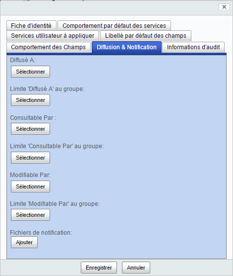
Cet onglet permet de définir les personnes à prévenir et à autoriser en fin de processus. Il permet également de charger des templates de notifications et des fichiers de configurations spécifiques au processus.
Diffusé à¶
Cette liste de sélection permet au concepteur du processus de sélectionner les personnes à prévenir en fin de processus. A la fin du processus, les personnes sélectionnées :
- recevront un email indiquant que le processus s'est terminé avec succès,
- auront des droits en lecture sur le document ayant passé le processus,
- devront accuser réception du document si le service d'Accusé réception est actif sur le processus,
- pourront émettre des demandes de modification sur le document si le service de demande de modification est actif sur le processus.
Limite 'Diffusé à' au groupe¶
Cette propriété n'est pas directement accessible par les intervenants sur un processus mais est intégrée à une application qui s'appuie sur Blue Processus : suite à l'intégration de cette propriété, les utilisateurs de l'application ne pourront sélectionner des personnes ou groupes à qui diffuser que parmi les membres du groupe sélectionné par le concepteur du processus pour cette propriété.
L'intégration de cette propriété doit être réalisée par une personne compétente en informatique et non une personne métier.
Intégration¶
L'association du paraphe 'Diffusé à' permet de sélectionner des personnes à prévenir lorsque le processus s'achèvera. Cette association peut être instanciéee à tout moment dans la vie du paraphe tant que le processus n'est pas achevé.
L'association "Limite 'Diffusé à' au groupe" permet au concepteur du processus de limiter le choix des personnes/groupes de cette association aux membres (personnes ou sous-groupes) du groupe sélectionné. Ainsi, si un groupe Alfresco est sélectionné par le concepteur du processus, les personnes sélectionnées sur cette association ne pourront être choisies que parmi les membres de ce groupe.
En général cette association est utilisée par une application s'appuyant sur Blue Processus via le formulaire de création d'un paraphe ou de création d'un document sur lequel est lancé le paraphe (dans ce deuxième cas, le type du document doit proposer un type d'association similaire à l'association 'Diffusé à' du paraphe).
Consultable par¶
Cette liste de sélection permet au concepteur du processus de sélectionner les personnes à autoriser en lecture sur le document en fin de processus. A la fin du processus, les personnes sélectionnées :
- pourront visualiser le document ayant passé le processus,
- pourront émettre des demandes de modification sur le document si le service de demande de modification est actif sur le processus.
Limite 'Consultable par' au groupe¶
Cette propriété n'est pas directement accessible par les intervenants sur un processus mais est intégrée à une application qui s'appuie sur Blue Processus : suite à l'intégration de cette propriété, les utilisateurs de l'application ne pourront sélectionner des personnes ou groupes à qui donner des droits en lecture que parmi les membres du groupe sélectionné par le concepteur du processus pour cette propriété.
L'intégration de cette propriété doit être réalisée par une personne compétente en informatique et non une personne métier.
Intégration¶
L'association du paraphe 'Consultable par' permet de sélectionner des personnes à autoriser en lecture sur le document lorsque le processus s'achèvera. Cette association peut être instanciée à tout moment dans la vie du paraphe tant que le processus n'est pas achevé.
L'association "Limite 'Consultable par' au groupe" permet au concepteur du processus de limiter le choix des personnes/groupes de cette association aux membres (personnes ou sous-groupes) du groupe sélectionné. Ainsi, si un groupe Alfresco est sélectionné par le concepteur du processus, les personnes sélectionnées sur cette association ne pourront être choisies que parmi les membres de ce groupe.
En général cette association est utilisée par une application s'appuyant sur Blue Processus via le formulaire de création d'un paraphe ou de création d'un document sur lequel est lancé le paraphe (dans ce deuxième cas, le type du document doit proposer un type d'association similaire à l'association 'Consultable par' du paraphe).
Modifiable par¶
Cette liste de sélection permet au concepteur du processus de sélectionner les personnes à autoriser en écriture sur le document en fin de processus. A la fin du processus, les personnes sélectionnées :
- pourront éditer le document ayant passé le processus,
- pourront émettre des demandes de modification sur le document si le service de demande de modification est actif sur le processus.
Limite 'Modifiable par' au groupe¶
Cette propriété n'est pas directement accessible par les intervenants sur un processus mais est intégrée à une application qui s'appuie sur Blue Processus : suite à l'intégration de cette propriété, les utilisateurs de l'application ne pourront sélectionner des personnes ou groupes à qui donner des droits en écriture que parmi les membres du groupe sélectionné par le concepteur du processus pour cette propriété.
L'intégration de cette propriété doit être réalisée par une personne compétente en informatique et non une personne métier.
Intégration¶
L'association du paraphe 'Modifiable par' permet de sélectionner des personnes à autoriser en écriture sur le document lorsque le processus s'achèvera. Cette association peut être instanciée à tout moment dans la vie du paraphe tant que le processus n'est pas achevé.
L'association "Limite 'Modifiable par' au groupe" permet au concepteur du processus de limiter le choix des personnes/groupes de cette association aux membres (personnes ou sous-groupes) du groupe sélectionné. Ainsi, si un groupe Alfresco est sélectionné par le concepteur du processus, les personnes sélectionnées sur cette association ne pourront être choisies que parmi les membres de ce groupe.
En général cette association est utilisée par une application s'appuyant sur Blue Processus via le formulaire de création d'un paraphe ou de création d'un document sur lequel est lancé le paraphe (dans ce deuxième cas, le type du document doit proposer un type d'association similaire à l'association 'Modifiable par' du paraphe).
Fichiers de notification¶
Cette liste de sélection permet au concepteur du processus de sélectionner des fichiers de configuration et/ou des templates de notification qu'il a au préalable réalisé sur son ordinateur et de les charger dans la configuration du processus.
Les propriétés contenues dans les fichiers de configuration vont surcharger celles définis dans les fichiers de configuration par défaut de même nom de l'espace "Espace Racine/Dictionnaire de données/Modèles d'email/Modèles d'email de notification/BlueDolmen".
Les templates d'email vont surcharger ceux définis par défaut de même nom de l'espace "Espace Racine/Dictionnaire de données/Modèles d'email/Modèles d'email de notification/BlueDolmen/BlueParapheur".
Pour plus de détails sur la conception de ces fichiers, se référer au chapitre 'Configuration des services'.
Action¶
- Cliquer sur l'onglet 'Service utilisateur à appliquer'
Onglet 'Services utilisateur à appliquer'¶
Description¶
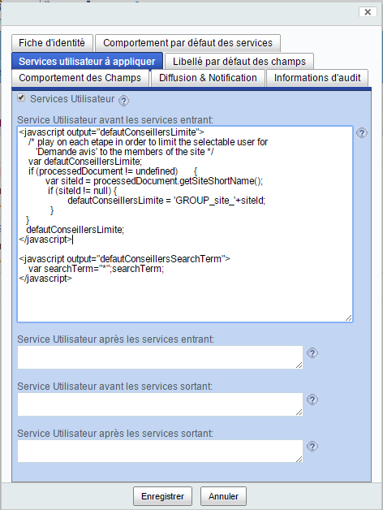
Cette partie est réservée à des personnes ayant une compétence informatique et non plus seulement métier afin d'étendre les services à des applications externes ou des comportements spécifiques.
Cet onglet permet de définir des services javascript ou java qui seront exécutés avant ou après chaque étape.
Dans chaque zone, la syntaxe à utiliser est la suivante:
- pour un service javascript :
<javascript output="variableName" error="continue|skip|stop" runas="username"> code javascript sur plusieurs lignes </javascript>
- pour un service java :
<java error="continue|skip|stop">java class pathname</java>
- output = le nom d'une variable dans laquelle est stockée le résultat du script,
- error = continue si vous souhaitez que les scripts suivants soient exécutés même si ce script est en erreur (hors 'runtime exception'),
- error =skip si vous souhaitez que les scripts suivants ne soient pas exécutés si script est en erreur (hors 'runtime exception),
- error = stop si vous souhaitez que le traitement de l'étape en cours soit en erreur si ce script est en erreur.
- runas = l'identifiant d'un utilisateur sous lequel le script doit être exécuté (ce peut-être 'System' pour avoir tous les droits).
Dans le cas d'une classe Java, cette classe doit implémenter l'interface 'com.bluexml.blueparapheur.workflow.helper.IUserService':
package com.bluexml.blueparapheur.workflow.helper;
import org.alfresco.service.ServiceRegistry;
import org.jbpm.graph.exe.ExecutionContext;
import com.bluexml.side.framework.alfresco.commons.configurations.PropertiesConfiguration;
public interface IUserService {
boolean execute(ExecutionContext executionContext, ServiceRegistry serviceRegistry, PropertiesConfiguration config);
}
'Service Utilisateur avant les services entrants'¶
Les services javascript ou java définis dans cette propriété du processus sont exécutés avant l'assignation de chaque étape et avant l'exécution des autres services (notification, historisation certifiée, signature, transformation pdf, ...).
Par contre, ils sont exécutés après l'instanciation de la variable 'reviewers' qui contient les utilisateurs qui vont être assignés à la tâche: il est donc possible de modifier cette valeur dans un script de ce champ pour changer les utilisateurs assignés.
'Service Utilisateur après les services entrants'¶
Les services javascript ou java définis dans cette propriété du processus sont exécutés avant l'assignation de chaque étape et après l'exécution des autres services (notification, historisation certifiée, signature, transformation pdf, ...).
'Service Utilisateur avant les services sortants'¶
Les services javascript ou java définis dans cette propriété du processus sont exécutés suite à la réalisation de chaque étape et avant l'exécution des autres services (notification, historisation certifiée, signature, transformation pdf, ...).
'Service Utilisateur après les services sortants'¶
Les services javascript ou java définis dans cette propriété du processus sont exécutés suite à la réalisation de chaque étape et après l'exécution des autres services (notification, historisation certifiée, signature, transformation pdf, ...).
Exemple¶
<javascript><import resource="classpath:/alfresco/extension/bluedolmen/blueparapheur/testcases/publicationAction.js">
t();
</javascript>
ou
<java>com.bluexml.blueparapheur.workflow.Utils.JiraUserService</java>
Action¶
-
Cliquer sur le bouton 'Enregistrer'. Vous entrez dans la page de détails du nouveau processus : cette page est une page standard de gestion documentaire d'Alfresco Share qui permet d'afficher les propriétés d'un nœud (contenu ou espace), de rajouter des commentaires et d'effectuer des actions comme l'édition des propriétés, la suppression, ....
-
Sur le fil d’Ariane de cette page, cliquer sur 'monProcessus' pour afficher son contenu Son contenu est pour l'instant vide car nous n'avons pas encore défini d'étape au processus.
-
Positionner la souris sur le nom du processus pour afficher le menu d'action à droite et cliquer sur le bouton '+ Plus' puis sur 'Afficher le processus'.
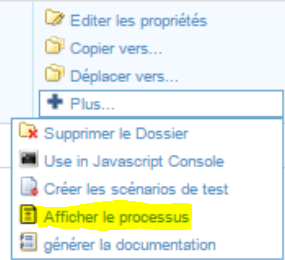
Le modeleur web du processus s'affiche.
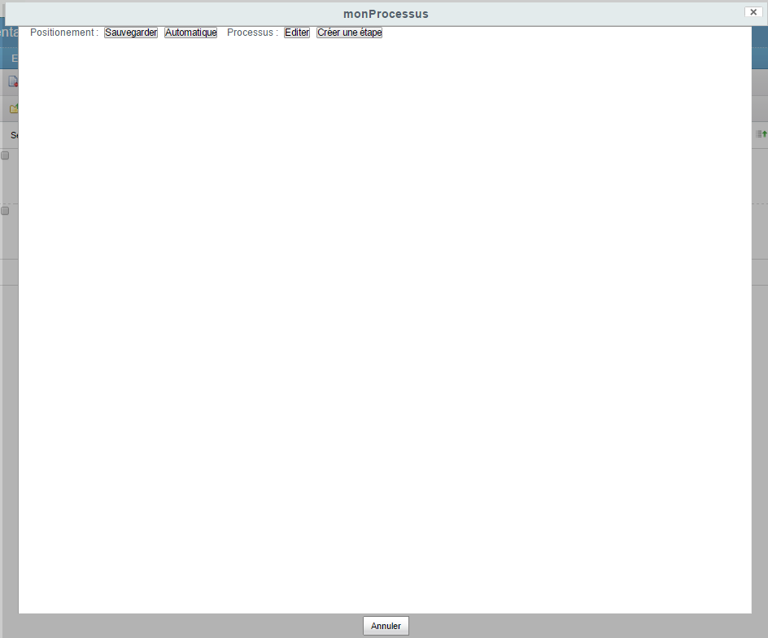
Création d'une étape du processus documentaire¶
Introduction¶
Dans ce chapitre nous procédons à la création de l'élément 'Etape' qui va contenir la définition d'une étape.
- Cliquer sur le bouton 'Créer une étape' pour ouvrir le formulaire de création d'un étape.
Le formulaire de création d'une étape s'affiche et vous permet d'entrer les propriétés de l'élément 'Etape':

Onglet 'Fiche d'identité'¶
Description¶
Le premier onglet du formulaire d'étape permet d'entrer les propriétés générales de l'étape:
-
'Nom de l'étape' : cette propriété est obligatoire et permet d'identifier de façon unique l'étape dans le processus.
-
'Titre' : cette propriété permet de préciser par un texte court les objectifs de l'étape.
-
'Description' : cette propriété permet de décrire en détails l'étape à réaliser par les intervenants.
-
'Aide affichée' : cette propriété permet de donner un texte d'aide qui est affiché à chaque intervenant dans l'onglet 'Aide' du formulaire de tâche.
-
'largeur (em)' : Le formulaire de tâche est chargée avec une largeur par défaut. Cette propriété permet de donner une largeur minimum du texte d'aide qui est affiché à chaque intervenant dans l'onglet 'Aide' du formulaire de tâche. Elle permet d'afficher correctement les tableaux, en particulier s'ils sont larges.
Les 4 premiers champs sont utilisés dans la documentation générée du processus.
Le titre de l'étape apparaît sur le formulaire de tâche qui est soumis à chaque intervenant quand le processus est en cours d'exécution.
Action¶
- Entrez pour nom 'Révision'
Note: les noms d'étape ne doivent pas contenir de caractère simple quote ' ou double quote '' car dans ce cas la sauvegarde des positions est impossible.
-
Entrez pour titre 'Etape démarrage de Révision'
-
Entrez dans le champ 'Aide affichée' le texte suivant: "un peu d'aide est souvent utile !"
-
Metter en gras le mot 'utile'.
-
Cliquez sur l'onglet 'Comportement des services'
Onglet 'Comportement des services'¶
Description¶
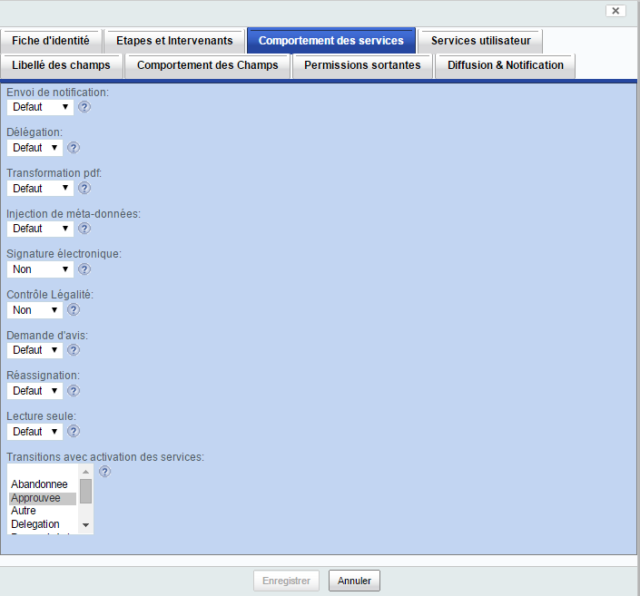
Cet onglet permet de configurer le comportement des services sur l'étape.
Les services proposés sont ceux du processus qui peuvent s'appliquer quand le processus est actif. Ainsi les services d'accusé réception, de demande de modification et d'archivage qui sont nécessaires après la réalisation d'un processus ne concernent pas les étapes et ne sont donc pas proposés sous cet onglet du formulaire.
Service de Notification & Alerte¶
La propriété 'Envoi de notification' peut avoir pour valeur:
-
'Defaut' : dans ce cas, la valeur 'oui' ou 'non' définie au niveau du processus est prise en compte pour activer ou non le service.
-
'Entrant' : dans ce cas, l'envoi de notification n'est réalisé qu'avant l'assignation de l'étape aux intervenants : par défaut cet envoi de notification concerne les personnes assignées à l'étape. Elles reçoivent un email leur indiquant qu'ils ont une tâche à réaliser. S'ils ne font pas leur tâche dans les temps elles reçoivent également des relances par email périodique.
-
'Sortant' : dans ce cas, l'envoi de notification n'est réalisé qu'après la réalisation de l'étape par les intervenants : par défaut cet envoi de notification concerne l'initiateur du processus qui reçoit un email lui indiquant qu'une étape vient d'être réalisée et le type d'email dépend de la transition choisie entre 'Approuver', 'Refuser', 'Corriger' ou 'Abandonner'.
-
'LesDeux' : dans ce cas, l'envoi de notification est réalisé avant et après la réalisation de l'étape par les intervenants.
-
'Non' : dans ce cas, il n'y a pas d'envoi de notification sur cette étape.
Service de Délégation¶
La propriété 'Délégation' peut avoir pour valeur:
-
'Defaut' : dans ce cas, la valeur 'oui' ou 'non' définie au niveau du processus est prise en compte pour activer ou non le service de délégation. Si au niveau du processus, le service de délégation est activé et si une personne assignée sur l'étape a des délégués/suppléants, ces derniers sont automatiquement assignés sur l'étape. Si au niveau du processus, le service de délégation n'est pas activé, les délégués ou suppléants existants des intervennts ne seront pas assignés à l'étape.
-
'Oui' : dans ce cas, si une personne assignée sur l'étape a des délégués/suppléants, ces derniers sont automatiquement assignés sur l'étape,
-
'Non' : dans ce cas, la délégation n'est pas mise en œuvre sur cette étape.
La propriété 'Délégation d'étape' peut avoir pour valeur:
-
'Defaut' : dans ce cas, la valeur 'oui' ou 'non' définie au niveau du processus est prise en compte pour afficher un onglet de délégation sur le formulaire de tâche proposé aux intervenants. Si au niveau du processus, le service de délégation d'étape est activé, l'onglet de délégation est présent. Si au niveau du processus, le service de délégation d'étape n'est pas activé, l'onglet n'est pas présent.
-
'Oui' : dans ce cas, l'onglet de délégation est proposé sur le formulaire de tâche.
-
'Non' : dans ce cas, l'onglet de délégation n'est pas proposé sur le formulaire de tâche.
L'onglet 'Délégation' est proposé à l'utilisateur avec au moins un bouton 'Recharger les délégués'. Suivant le paramétrage de la liste de sélection 'Délégués' (voir ci-dessous "Onglet 'Comportement des champs'"), celle-ci peut également être proposée pour ajouter des délégués que sur l'étape.
Service de Transformation pdf¶
La propriété 'Transformation pdf' peut avoir pour valeur:
-
'Defaut' : dans ce cas, la valeur 'oui' ou 'non' définie au niveau du processus est prise en compte pour activer ou non le service.
-
'Entrant' : dans ce cas, la transformation pdf n'est réalisée qu'avant l'assignation de l'étape aux intervenants.
-
'Sortant' : dans ce cas, la transformation pdf n'est réalisée qu'après la réalisation de l'étape par les intervenants.
-
'LesDeux' : dans ce cas, la transformation pdf est réalisée avant et après la réalisation de l'étape par les intervenants.
-
'Non' : dans ce cas, il n'y a pas de transformation pdf sur cette étape.
Les fichiers qui sont transformés en pdf sont :
-
les fichiers transformables se trouvant sous le document sur lequel le processus a été lancé dans le cas où ce document est un répertoire,
-
le document lui-même s'il est transformable en pdf si ce document est un fichier.
Les fichies transformables sont essentiellement des documents MS Office, Libre Office ou Open Office (cette liste peut être étendue si des transformateurs sont ajoutés à Alfresco).
Note: l'aspect 'Exclusion de Service' avec le propriété 'pas de transformation pdf' à vrai peut être ajouté aux fichiers transformables sur lesquels il n'est pas nécessaire de réaliser de transformation pdf. En général, l'ajout de cet aspect se fait via des règles ou des extensions de services utilisateur sur le processus (voir Onglet 'Services utilisateur à appliquer').
Service de Document d'Historisation¶
La propriété 'Document d'Historisation' peut avoir pour valeur:
-
'Defaut' : dans ce cas, la valeur 'oui' ou 'non' définie au niveau du processus est prise en compte pour activer ou non le service.
-
'Entrant' : dans ce cas, la création du document d'historisation n'est réalisée qu'avant l'assignation de l'étape aux intervenants.
-
'Sortant' : dans ce cas, la création du document d'historisation n'est réalisée qu'après la réalisation de l'étape par les intervenants.
-
'LesDeux' : dans ce cas, la création du document d'historisation est réalisée avant et après la réalisation de l'étape par les intervenants.
-
'Non' : dans ce cas, il n'y a pas de création du document d'historisation sur cette étape.
La création du document d'historisation consiste à créer un fichier MS Word qui contient l'historique du processuss documentaire sur le document.
Service de Signature électronique¶
La propriété 'Signature électronique' peut avoir pour valeur:
-
'Defaut' : dans ce cas, la valeur 'oui' ou 'non' définie au niveau du processus est prise en compte pour activer ou non le service de signature électronique une fois que l'étape a été réalisée. Si c'est 'oui', l'application de la signature utilise le certificat par défaut défini dans le fichier de configuration.
-
'Entrant' : dans ce cas, le formulaire de tâche contient un champ permettant à l'intervenant de sélectionner un certificat qu'il a préalablement chargé dans Alfresco et de saisir le mot de passe de ce certificat.
-
'Sortant' : dans ce cas, l'apposition de signature électronique est réalisée après la réalisation de l'étape par les intervenants : l'application de la signature utilise le certificat par défaut défini dans le fichier de configuration.
-
'LesDeux' : dans ce cas, le formulaire de tâche contient la sélection d'un certificat et la saisie du mot de passe de ce certificat et l'apposition de signature électronique est réalisée après la réalisation de l'étape par les intervenants : l'application de la signature utilise les certificats sélectionnées par les intervenants.
-
'Non' : dans ce cas, il n'y a pas d'apposition de signature électronique sur cette étape.
Les fichiers sur lesquels une signature électronique peut être apposée sont :
-
les fichiers transformable et pdf se trouvant sous le document sur lequel le processus a été lancé dans le cas où ce document est un répertoire,
-
le document lui-même si ce document est un fichier transformable ou pdf.
Les fichies transformables sont essentiellement des documents MS Office, Libre Office ou Open Office (cette liste peut être étendue si des transformateurs sont ajoutés à Alfresco).
Note: l'aspect 'Exclusion de Service' avec le propriété 'pas de signature électronique' à vrai peut être ajouté aux fichiers trasnformables ou pdf sur lesquels il n'est pas nécessaire d'injecter de signature électronique. En général, l'ajout de cet aspect se fait via des règles ou des extensions de services utilisateur sur le processus (voir Onglet 'Services utilisateur à appliquer').
Note: Sous Share, la page 'Certificats' des profils utilisateurs permet de charger des certificats. Pour y accéder, en haut et à droite du "prénom nom" de l'utilisateur connecté sous Alfresco Share, cliquer sur le petit triaingle et dans le menu qui s'ouvre sélectionner 'Mon Profil'. Cliquer sur le lien 'Certificats' et utiliser le bouton 'Ajouter un certificat' pour charger votre certificat. Si vous êtes administrateur Alfresco, le formulaire de chargement de certificat permet de charger le certificat pour une autre personne.
Service de Contrôle de légalité¶
La propriété 'Contrôle légalité' peut avoir pour valeur:
-
'Defaut' : dans ce cas, la valeur 'oui' ou 'non' définie au niveau du processus est prise en compte pour activer ou non le service.
-
'Oui' : dans ce cas, le contrôle de légalité est mis en œuvre sur cette étape.
-
'Non' : dans ce cas, il n'y a pas de Contrôle de légalité sur cette étape.
Service de Demande d'avis¶
La propriété 'Demande d'avis' peut avoir pour valeur:
-
'Defaut' : dans ce cas, la valeur 'oui' ou 'non' définie au niveau du processus est prise en compte pour activer ou non le service.
-
'Oui' : dans ce cas, l'intervenant peut demander un avis sur cette étape via le formulaire de tâche.
-
'Non' : dans ce cas, il n'y a pas de Demande d'avis sur cette étape.
Service de Réassignation¶
La propriété 'Réassignation' peut avoir pour valeur:
-
'Defaut' : dans ce cas, la valeur 'oui' ou 'non' définie au niveau du processus est prise en compte pour activer ou non le service.
-
'Oui' : dans ce cas, l'intervenant peut réassigner sa tâche à une ou plusieurs personnes sur cette étape via le formulaire de tâche.
-
'Non' : dans ce cas, il n'y a pas de réassignation possible sur cette étape.
Service d'Autorisation¶
Au niveau étape, le service d'autorisation a été subdivisé en 2 parties:
- l'onglet 'Comportement des services' intègre les autorisations concernant les personnes assignées à l'étape avant leur assignation ('Entrant'),
- l'onglet 'Permissions sortantes' intègre les autorisations concernant toutes les personnes une fois que l'étape a été réalisée ('Sortant').
La propriété 'Lecture seule' peut avoir pour valeur:
-
'Defaut' : dans ce cas, la valeur 'oui' ou 'non' définie au niveau du processus est prise en compte pour affecter respectivement des droits en écriture ou en lecture sur le document.
-
'Oui' : dans ce cas, les personnes assignées sur l'étape (délégués compris) n'ont que des droits en lecture sur le document.
-
'Non' : dans ce cas, les personnes assignées sur l'étape (délégués compris) ont des droits en écriture sur le document.
Filtrage de services par transition¶
Cette propriété à multiple valeurs possibles (via le maintien de la touche 'CTRL') permet de sélectionner les transitions sur lesquels certains services sont appliquées:
-
si 'Abandonnee' est sélectionnée, les 'Services utilisateur' (voir ci-après onglet 'Services utilisateur') définis dans les champs 'Service Utilisateur avant les services sortant' et 'Service Utilisateur après les services sortant' sont appliqués à la fin de l'étape si elle autorise les services utilisateur et si les assignés ont abandonné.
-
si 'Approuvee' et/ou 'Autre' et/ou 'Refusee' sont sélectionnées, les services suivants sont activés - dans l'ordre indiqué - en fin d'étape si les intervenants ont respectivement 'Approuver' et/ou 'Corriger' et/ou 'Refuser' et si l'étape autorise ces services :
- les 'Services utilisateur' définis dans les champs 'Service Utilisateur avant les services sortant',
- 'Injection de méta-données',
- 'Transformation pdf',
- 'Signature électronique'
- les 'Services utilisateur' définis dans le champ 'Service Utilisateur après les services sortant',
Action¶
- Cliquer sur l'onglet 'Libellé des champs'
Onglet 'Libellé des champs'¶
Description¶
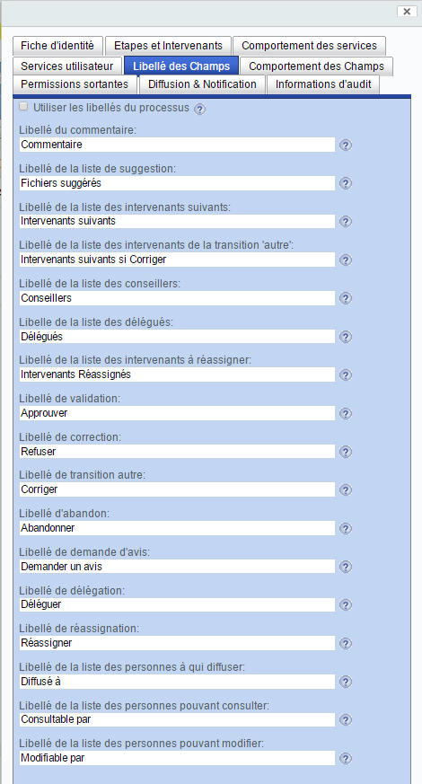
Comme pour le processus, cet onglet 'Libellé des champs' permet de changer tous les textes du formulaire de tâche pour l'étape si vous désactivez la case à cocher 'Utiliser les libellés du processus' (pour surcharger des textes définis au niveau du processus).
Si vous ne désactivez pas la case à cocher, les textes du processus sont utilisés.
Action¶
- Cliquer sur l'onglet 'Comportement des champs'
Onglet 'Comportement des champs'¶
Description¶
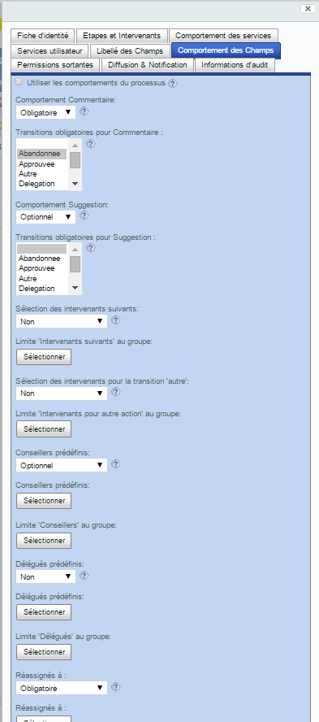
Comme pour le processus, cet onglet permet de paramétrer le comportement des champs et des boutons constituant le formulaire de tâche qui sera présenté à chaque intervenant de l'étape si vous désactivez la case à cocher 'Utiliser les comportements du processus' (pour surcharger les comportements définis au niveau du processus).
Si vous ne désactivez pas la case à cocher, les comportements suivants du processus sont utilisés:
- Comportement Commentaire,
- Transitions obligatoires pour Commentaire,
- Comportement Suggestion,
- Transitions obligatoires pour Suggestion,
- Sélection des intervenants suivants,
- Sélection des intervenants suivants pour la transition autre,
- Sélection des conseillers,
- Sélection des délégués,
- Sélection des intervenants réassignés,
- Diffusé à,
- Consultable par,
- Modifiable par.
Au niveau étape, les propriétés ci-dessus sont identiques à celles du processus si ce n'est qu'elles sont limitées à l'étape. D'autres propriétés de l'étape permettent d'avoir des comportements plus précis des champs et sont décrites ci-après.
Limite 'Intervenants suivants' au groupe¶
Cette liste de sélection de groupe permet de choisir un groupe Alfresco et ainsi limiter la sélection des 'Intervenants suivants' par les assignés sur le formulaire de tâche aux seuls membres du groupe.
Limite 'Intervenants pour autre action' au groupe¶
Cette liste de sélection de groupe permet de choisir un groupe Alfresco et ainsi limiter la sélection des 'Intervenants suivants si Corriger' sur le formulaire de tâche aux seuls membres du groupe.
Conseillers prédéfinis¶
Cette liste de sélection de personne ou groupe permet au concepteur du processus de choisir des personnes ou groupes Alfresco qui peuvent être des conseillers sur l'étape pour les demandes d'avis.
Ainsi, il est possible de forcer la liste des conseillers auxquels les assignés d'une étape peuvent demander un avis.
Un assigné pourra toutefois demander un avis en choisissant ses propres conseillers dans la liste des conseillers 'Conseillers' du formulaire de tâche.
Cette propriété n'est utilisée que si la propriété 'Sélection des conseillers' a pour valeur 'Optionnel', 'OptionnelPersonne' ou 'OptionnelGroupe'.
Limite 'Conseillers' au groupe¶
Cette liste de sélection de groupe permet de choisir un groupe Alfresco et ainsi limiter la sélection des 'Conseillers' par les assignés sur le formulaire de tâche aux seuls membres du groupe.
Délégués prédéfinis¶
Cette liste de sélection de personne ou groupe permet au concepteur du processus de choisir des personnes ou groupes Alfresco qui vont être des délégués des assignés le temps de l'étape.
Ainsi, il est possible de forcer des délégués aux assignés.
Un assigné pourra toutefois
- choisir ses propres délégués sur l'étape en les sélectionnant dans le liste des conseillers 'Conseillers' du formulaire de tâche.
- via la configuration des délégués (voir 'Configuration des services -> Délégation', s'associer des délégués temporaires ou permanents : dans ce cas, pour que ces nouveaux délégués soient pris en compte, il devra cliquer sur le bouton 'Recharger les délégués' du formulaire de tâche.
Cette propriété n'est utilisée que si la propriété 'Sélection des délégués' a pour valeur 'Optionnel', 'OptionnelPersonne' ou 'OptionnelGroupe'.
Limite 'Délégués' au groupe¶
Cette liste de sélection de groupe permet de choisir un groupe Alfresco et ainsi limiter la sélection des 'Délégués' par les assignés sur le formulaire de tâche aux seuls membres du groupe.
Réassignés à prédéfinis¶
Cette liste de sélection de personne ou groupe permet au concepteur du processus de choisir des personnes ou groupes Alfresco à qui l'étape peut être réassignée si des assignés choisissent de réassigner leur tâche.
Ainsi, il est possible de forcer les personnes à qui réassigner.
Un assigné pourra toutefois choisir sur l'étape les personnes à qui réassigner en les sélectionnant dans la liste des réassignés 'Intervenants Réassignés' du formulaire de tâche.
Cette propriété n'est utilisée que si la propriété 'Sélection des intervenants réassignés' a pour valeur 'Optionnel', 'OptionnelPersonne' ou 'OptionnelGroupe'.
Limite 'Intervenants Réassignés' au groupe¶
Cette liste de sélection de groupe permet de choisir un groupe Alfresco et ainsi limiter la sélection des 'Intervenants Réassignés' par les assignés sur le formulaire de tâche aux seuls membres du groupe.
Limite 'Diffusé à' au groupe¶
Cette liste de sélection de groupe permet de choisir un groupe Alfresco et ainsi limiter la sélection des 'Diffusé à' par les assignés sur le formulaire de tâche aux seuls membres du groupe.
Limite 'Consultable Par' au groupe¶
Cette liste de sélection de groupe permet de choisir un groupe Alfresco et ainsi limiter la sélection des 'Consultable par' par les assignés sur le formulaire de tâche aux seuls membres du groupe.
Limite 'Modifiable Par' au groupe¶
Cette liste de sélection de groupe permet de choisir un groupe Alfresco et ainsi limiter la sélection des 'Modifiable par' par les assignés sur le formulaire de tâche aux seuls membres du groupe.
Action¶
- Cliquer sur l'onglet 'Permissions Sortantes'
Onglet 'Permissions Sortantes'¶
Description¶
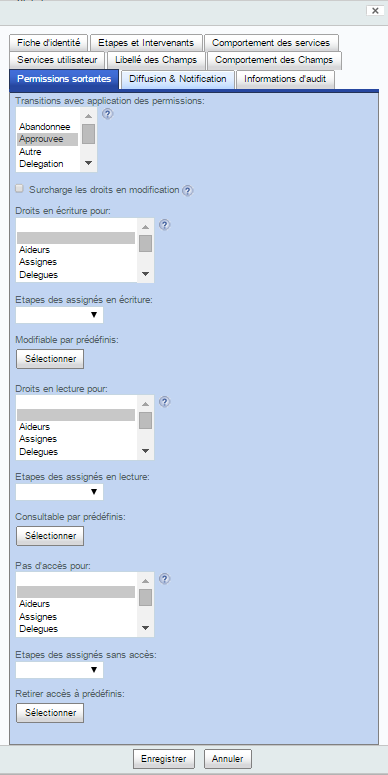
Cet onglet permet d'affiner le service d'autorisation en fin d'étape en définissant 3 types de permission sur différentes catégories d'acteurs du processus. Les 3 types de permission sont :
-
'droits en écriture' qui permet de modifier le contenu et les propriétés du document. Ce droit permet également par défaut :
- d'avoir des droits en écriture sur les enfants du document s'il s'agit d'un répertoire,
- d'accéder en lecture aux parents du document,
- d'accéder en lecture aux documents référencés par ce document.
-
'droits en lecture' qui permet de visualiser le contenu et les propriétés du document (mais pas de les modifier). Ce droit permet également par défaut :
- d'avoir des droits en lecture sur les enfants du document s'il s'agit d'un répertoire,
- d'accéder en lecture aux parents du document,
- d'accéder en lecture aux documents référencés par ce document.
-
'pas d'accès' qui empêche d'accéder et de visualiser un document.
Note: les permissions sur les enfants, les parents et les documents référencés peuvent être paramétrés (voir 'Configuration des services -> Service d'autorisation'.
Transitions avec application des permissions¶
Cette propriété à multiple valeurs possibles (via le maintien de la touche 'CTRL') permet d'indiquer sur quelles transitions les permissions vont devoir s'appliquer à la fin de l'étape.
Note: Les transitions 'Delegation', 'DemandeAvis' et 'Reassigne' n'amènent pas à une fin d'étape et ne sont donc pas pertinentes dans ce cas.
Surcharge les droits en modification¶
Si La propriété 'Surcharge les droits en modification' est cochée, les permissions d'édition du document sont retirées à la fin de l'étape avant de positionner les permissions sortantes. Dans ce cas, le document n'aura plus en édition que les permissions définies au niveau de l'étape par les propriétés 'Droits en écriture pour', 'Etapes des assignés en écriture' et 'Modifiable par prédéfinis' décrites ci-après.
Si la propriété n'est pas cochée, le document conserve ses permissions d'édition.
Droits en écriture pour¶
Cette propriété à multiple valeurs possibles (via le maintien de la touche 'CTRL') permet de définir les catégories d'utilisateurs qui recevront la permission d'éditer le document à l'issue de cette étape.
Les valeurs possibles sont :
-
'Aideurs' : pour identifier les conseillers qui sont intervenus sur l'étape pour donner leur avis,
-
'Assignes' : pour identifier les personnes assignées sur l'étape,
-
'Delegues' : pour identifier les délégués des personnes assignées sur l'étape,
-
'DeleguesIntervenantsActifs' : pour identifier les délégués des personnes assignés qui ont été actives sur l'étape (si l'étape n'est pas parallèle pour les assignés, seul un assigné a été actif; si l'étape est parallèle, tous les assignés ont été actifs),
-
'InitConsultablePar' : pour identifier les personnes qui ont reçu des droits en lecture au lancement du processus,
-
'InitModifiablePar' : pour identifier les personnes qui ont reçu des droits en écriture au lancement du processus,
-
'InitSansAccesA' : pour identifier les personnes à qui ont retiré les droits d'accès au document au lancement du processus,
-
'Initiateur' : pour identifier la personne qui a lancé le processus,
-
'IntervenantsActifs' : pour identifier les personnes assignés qui ont été actifs sur l'étape,
-
'IntervenantsNonActifs' : pour identifier les personnes assignés qui n'ont pas été actifs sur l'étape,
-
'Precedent' : pour identifier tous les intervenants sur l'étape précédente,
-
'Precedents' : pour identifier tous les intervenants de toutes les étapes précédentes.
Etapes des assignés en écriture¶
Cette liste de sélection permet de sélectionner les étapes pour lesquels les intervenants (assignés, délégués, aideurs) recevront des droits en écriture sur le document à l'issue de l'étape courante.
Cette application de permission en écriture ne se fait que sur les étapes sélectionnées qui ont été réalisées précédemment dans le processus.
Modifiable par prédéfinis¶
Cette liste de sélection permet de sélectionner des personnes et/ou groupes Alfresco qui recevront des droits en écriture sur le document à l'issue de l'étape.
Droits en lecture pour¶
Cette propriété à multiple valeurs possibles (via le maintien de la touche 'CTRL') permet de définir les catégories d'utilisateurs qui recevront la permission d'accéder et visualiser le document à l'issue de cette étape.
Les valeurs possibles sont les mêmes que pour la propriété 'Droits en écriture pour'.
Etapes des assignés en lecture¶
Cette liste de sélection permet de sélectionner les étapes pour lesquels les intervenants (assignés, délégués, aideurs) recevront des droits en lecture sur le document à l'issue de l'étape courante.
Cette application de permission en lecture ne se fait que sur les étapes sélectionnées qui ont été réalisées précédemment dans le processus.
Consultable par prédéfinis¶
Cette liste de sélection permet de sélectionner des personnes et/ou groupes Alfresco qui recevront des droits en lecture sur le document à l'issue de l'étape.
Pas d'accès pour¶
Cette propriété à multiple valeurs possibles (via le maintien de la touche 'CTRL') permet de définir les catégories d'utilisateurs qui se verront retirer l'accès au document à l'issue de cette étape.
Les valeurs possibles sont les mêmes que pour la propriété 'Droits en écriture pour'.
Etapes des assignés sans accès¶
Cette liste de sélection permet de sélectionner les étapes pour lesquels les intervenants (assignés, délégués, aideurs) se verront retirer l'accès au document à l'issue de l'étape courante.
Ce retrait des permissions ne se fait que sur les étapes sélectionnées qui ont été réalisées précédemment dans le processus.
Retirer accès à prédéfinis¶
Cette liste de sélection permet de sélectionner des personnes et/ou groupes Alfresco qui se verront retirer l'accès au document à l'issue de l'étape.
Action¶
- Cliquer sur l'onglet 'Diffusion & Notification'
Onglet 'Diffusion & Notification'¶
Description¶
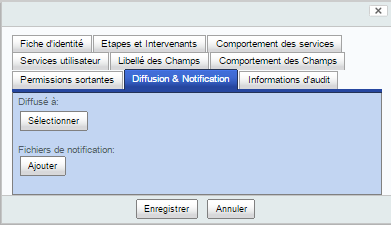
Cet onglet permet de définir les personnes à prévenir en fin d'étape. Il permet également de charger des templates de notifications et des fichiers de configurations spécifiques à l'étape.
Diffusé à prédéfinis¶
Cette liste de sélection permet au concepteur du processus de sélectionner les personnes à prévenir à la fin de l'étape. A la fin de l'étape, les personnes sélectionnées :
- recevront un email indiquant que l'étape s'est terminée,
- auront des droits en lecture sur le document ayant passé l'étape,
Fichiers de notification¶
Cette liste de sélection permet au concepteur du processus de sélectionner des fichiers de configuration et/ou des templates de notification qu'il a au préalable réalisé sur son ordinateur et de les charger dans la configuration de l'étape.
Les propriétés contenues dans les fichiers de configuration vont surcharger celles définies de même nom dans les fichiers de configuration du processus et celles par défaut dans l'espace "Espace Racine/Dictionnaire de données/Modèles d'email/Modèles d'email de notification/BlueDolmen".
Les templates d'email vont surcharger ceux définis de même nom au niveau du processus et par défaut
dans l'espace "Espace Racine/Dictionnaire de données/Modèles d'email/Modèles d'email de notification/BlueDolmen/BlueParapheur".
Pour plus de détails sur la conception de ces fichiers, se référer au chapitre 'Configuration des services'.
Action¶
- Cliquer sur l'onglet 'Service utilisateur à appliquer'
Onglet 'Services utilisateur à appliquer'¶
Description¶
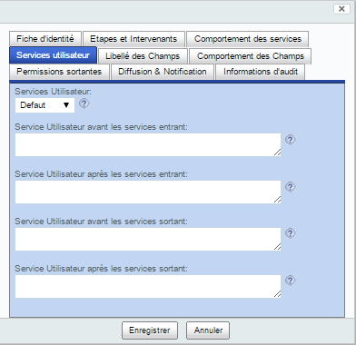
Cette partie contient les mêmes propriétés que celle du processus 'Services utilisateur à appliquer'.
La seule différence est relative à la valeur de la propriété 'Services Utilisateur'. Dans le cas de l'étape, les valeurs possibles de cette propriété sont :
-
'Defaut' : dans ce cas, la valeur 'oui' ou 'non' définie au niveau du processus est prise en compte pour activer ou non le service. Si oui, au niveau du processus, les codes JavaScript et Java définis au niveau du processus et au niveau de l'étape sont exécutés en commençant par les codes du processus puis ceux de l'étape.
-
'Entrant' : dans ce cas, seuls les codes JavaScript et Java définis au niveau de l'étape dans les propriétés 'Service Utilisateur avant les services entrant' et 'Service Utilisateur après les services entrant' sont exécutés.
-
'Sortant' : dans ce cas, seuls les codes JavaScript et Java définis au niveau de l'étape dans les propriétés 'Service Utilisateur avant les services sortant' et 'Service Utilisateur après les services sortant' sont exécutés.
-
'LesDeux' : dans ce cas, seuls les codes JavaScript et Java définis au niveau de l'étape sont exécutés.
-
'Non' : dans ce cas, il n'y a pas de code JavaScript et Java exécuté sur cette étape.
Action¶
- Cliquer sur le bouton 'Etapes et Intervenants'
Onglet 'Etapes et Intervenants'¶
Description¶
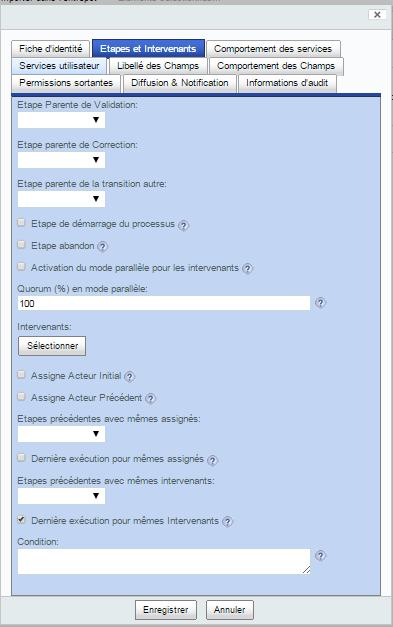
Cet onglet rassemble ce qui est utile à l'assignation des intervenants sur l'étape et à l'enchaînement des étapes.
C'est donc l'onglet avec 'Fiche d'identité' qui est forcément utilisé à la création d'une étape, les autres onglets pouvant être laissés par défaut au départ.
Enchaînement des étapes¶
Passer d'une étape à une autre comme expliqué dans la partie 'Structure d'un processus documentaire' se fait en utilisant les 4 transitions possibles:
-
Transition de validation,
-
Transition de refus,
-
Transition autre,
-
Transition d'abandon.
Etape Parente de Validation¶
Cette propriété permet de sélectionner les étapes par lesquels les transitions de validation aboutissent à cette étape.
Ainsi, supposons qu'il existe une étape 'première étape' que nous sélectionnons comme 'Etape Parente de Validation' de notre étape 'Révision' : dès que les assignés de l'étape 'première étape' auront cliqué sur le bouton 'Approuver' sur leur formulaire de tâche, l'étape 'Révision' sera lancée.
Etape Parente de Refus¶
Cette propriété permet de sélectionner les étapes par lesquels les transitions de refus aboutissent à cette étape.
Ainsi, supposons qu'il existe une étape 'première étape' que nous sélectionnons comme 'Etape Parente de Refus' de notre étape 'Révision' : dès que les assignés de l'étape 'première étape' auront cliqué sur le bouton 'Refuser' sur leur formulaire de tâche, l'étape 'Révision' sera lancée.
Etape Parente de la transition autre¶
Cette propriété permet de sélectionner les étapes par lesquels les transitions autre aboutissent à cette étape.
Ainsi, supposons qu'il existe une étape 'première étape' que nous sélectionnons comme 'Etape Parente de la transition autre' de notre étape 'Révision' : dès que les assignés de l'étape 'première étape' auront cliqué sur le bouton 'Corriger' sur leur formulaire de tâche, l'étape 'Révision' sera lancée.
Etape de démarrage du processus¶
Si cette propriété est cochée, l'étape est automatiquement lancée au démarrage du processus.
Etape abandon¶
Si cette propriété est cochée, l'étape peut être abandonnée par les personnes assignée : dans ce cas, un bouton 'Abandonner' est proposé sur le formulaire de tâche.
Au niveau du modeleur web, l'étape apparaît avec un contour rouge.
Condition¶
Cette partie est réservée à des personnes ayant une compétence informatique et non plus seulement métier afin de définir une condition de passage d'une étape.
Cette propriété permet de renseigner une condition sur l'étape: l'étape ne sera réalisée que si la condition définie est vraie.
Les conditions sont de la forme:
<JavaScript output="retourCondition">
code JavaScript sur plusieurs lignes
</JavaScript>
<java>java class pathname</java>
Dans le cas d'un code JavaScript, une seule valeur booléenne doit être retournée (Attention, ne pas mettre de mot clé 'return' mais directement la valeur à retourner). Par exemple, le code suivant est vrai si la personne ayant réalisée l'étape précédente est associée à un service :
<JavaScript output="retourCondition">
var service = person.properties["cm:organization"];
if (service != null) { true; } else { false; }
</JavaScript>
retourne vrai si la personne qui effectue la tâche est associée à un service, 'person' étant un objet prédéfini de l'API JavaScript d'Alfresco.
Dans le cas d'un code Java, il est nécessaire d'affecter la variable 'retourCondition' a une valeur 'true' ou 'false' :
ContextInstance contextInstance = executionContext.getContextInstance();
Token token = executionContext.getToken();
contextInstance.setVariable("retourCondition", true,token);
La classe Java doit implémenter l'interface 'com.bluexml.blueparapheur.workflow.helper.IUserService'.
Le code JavaScript ou le code Java s'appuie sur les APIs Alfresco.
Note: le code d'une condition est similaire à celui d'un 'Service utilisateur' des propriétés 'Service Utilisateur avant/après les services entrant/sortant' à la seule différence qu'il doit retourner un booléen dans la variable 'retourCondition'.
Assignation des intervenants¶
Assigner des intervenants peut se réaliser de différentes manières (voir la partie 'Structure d'un processus documentaire').
L'onglet 'Etapes et Intervenants' permet d'établir les principales façons d'assigner des intervenants sur une étape.
Activation du mode parallèle pour les intervenants¶
Si cette propriété est cochée, les assignés devront tous réaliser ('Approuver', 'Refuser', 'Corriger' ou 'Abandonner') cette étape via le formulaire de tâche pour passer aux étapes suivantes.
Si elle n'est pas cochée, un seul des assignés devra réaliser l'étape pour passer aux étapes suivantes.
Quorum (%) en mode parallèle¶
Dans le cas d'une étape en mode parallèle pour les intervenants, cette propriété donne le pourcentage sur l'ensemble des assignés de l'étape qui doivent valider ('Approuver') pour que l'étape soit considérée comme approuvée. Les étapes suivantes sont alors celles qui ont cette étape pour 'Etape Parente de Validation'.
Si ce pourcentage n'est pas atteint, l'étape est refusée : les étapes suivantes sont alors celles qui ont cette étape pour 'Etape Parente de Refus'.
Intervenants¶
Cette liste de sélection permet au concepteur du processus de sélectionner des groupes ou des personnes qui sont directement assignés à l'étape.
Assigne Acteur Initial¶
Si cette propriété est cochée, la personne qui a lancé le processus est assignée à cette étape.
Assigne Acteur Précédent¶
Si cette propriété est cochée, la dernière personne à effectuer l'étape précédente est assignée à cette étape.
Etapes précédentes avec mêmes assignés¶
Cette liste de sélection permet au concepteur du processus de sélectionner des étapes dont les assignés vont être assignés à cette étape.
Évidemment, les étapes sélectionnées doivent précéder dans le processus cette étape.
Dernière exécution pour mêmes assignés¶
Si cette propriété est cochée, pour chaque étape de la liste 'Etapes précédentes avec mêmes assignés', seuls les assignés de la dernière exécution seront pris en compte.
Évidemment, ceci n'a de sens que pour les étapes qui sont exécutées plusieurs fois dans le processus.
Etapes précédentes avec mêmes intervenants¶
Cette liste de sélection permet au concepteur du processus de sélectionner des étapes dont les assignés actifs (ceux qui ont effectivement réalisé leur tâche : tous les assignés dans le cas d'une étape en 'mode parallèle pour les intervenants'; un des assignés sinon) vont être assignés à cette étape.
Évidemment, les étapes sélectionnées doivent précédées dans le processus cette étape.
Dernière exécution pour mêmes intervenants¶
Si cette propriété est cochée, pour chaque étape de la liste 'Etapes précédentes avec mêmes intervenants', seuls les assignés actifs de la dernière exécution seront pris en compte.
Évidemment, ceci n'a de sens que pour les étapes qui sont exécutées plusieurs fois dans le processus.
Action¶
-
Cliquer sur la case à cocher 'Etape de démarrage du processus'
-
Cliquer sur le bouton 'Sélectionner' de la liste 'Intervenants'
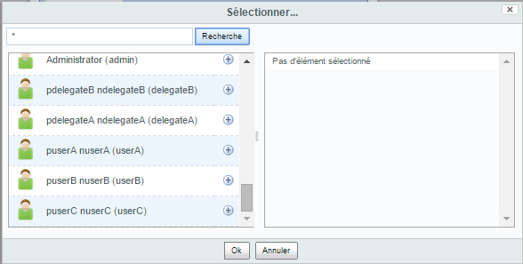
-
La fenêtre de sélection des groupes et personnes s'affiche. Dans le champ de saisie, taper 'u*' et cliquer sur 'Recherche'
-
Sélectionner 'userA' en cliquant dans la liste de gauche sur le '+' à sa droite: 'userA' apparait comme sélectionné dans la liste de droite.
-
Cliquer sur le bouton 'Enregistrer'
L'étape 'Révision' apparaît sur le modeleur web de processus.
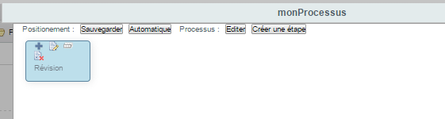
Enchaînement des étapes¶
Introduction¶
Une première étape 'Révision' a été créée.
Le processus documentaire que nous allons créer pour cette explication de Blue Processus se compose de 3 étapes :
- une étape de démarrage dont l'objectif est la révision du document,
- une étape d'approbation qui terminera le processus,
- une étape de correction qui est utilisée par les 2 autres s'il est nécessaire d'apporter des corrections au document lors de sa révision ou son approbation.
Pour créer une étape via le modeleur web, 2 façons sont possibles :
- via le bouton 'Créer une étape',
- via l'icône de duplication d'étape.
Création de l'étape d'approbation¶
Action¶
-
Cliquer sur l'icône de duplication de l'étape 'Révision'
-
Dans le formulaire réduit qui s'affiche, entrer les valeurs pour les propriétés de l'onglet 'Fiche d'identité':
-
'Nom de l'étape' : Approbation
-
'Titre' : Etape d'approbation
-
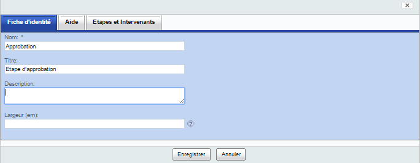
-
Cliquer sur l'onglet 'Aide' et entrer la valeur suivante:
- 'Aide affichée' : Ce document a été révisé et il vous est transmis pour approbation. Il vous suffit de cliquer sur le bouton 'Approuver' si vous pensez que ce document peut être mis en application. Toutefois si ce document ne vous convient pas, indiquer dans le champ 'Commentaire' vos remarques et cliquer sur le bouton 'Refuser' pour transmettre en retour au rédacteur s'il est nécessaire de lui apporter des modifications importantes de fond. Si vous pensez que ce document ne nécessite pas d'approbation par exemple, utiliser le bouton 'Abandonner' pour interrompre le circuit de validation. Si vous souhaitez un avis complémentaire, utilisez l'onglet 'Demande d'avis'.
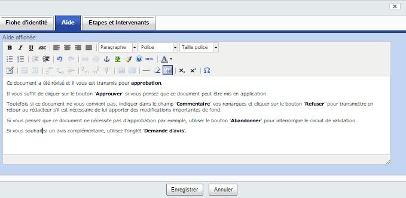
- Cliquer sur l'onglet 'Etapes et Intervenants'
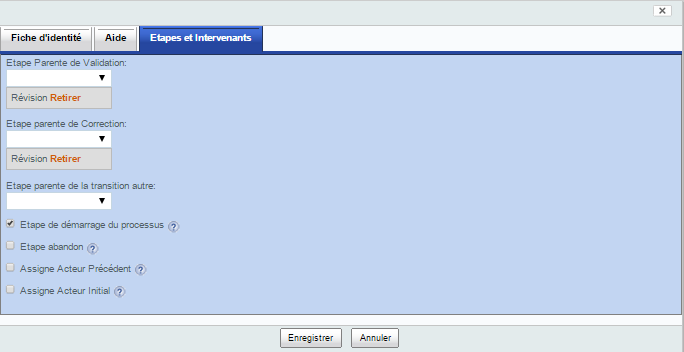
Enchaînement des étapes¶
Etape Parente de Validation¶
La duplication a automatiquement renseigné la propriété 'Etape parente de Validation' en lui associant l'étape dupliquée.
Dans notre processus, lorsque l'intervenant a révisé sur sa tâche de révision, nous voulons passer de l'étape 'Révision' à l'étape 'Approbation'. Donc l'étape 'Révision' est bien une 'Etape parente de Validation' de l'étape 'Approbation'.
Etape Parente de Refus¶
La duplication a également automatiquement renseigné la propriété 'Etape parente de Refus' en lui associant l'étape dupliquée.
Mais, dans le processus que nous concevons, ce n'est pas une 'Etape parente de Refus' de l'étape 'Révision' puisqu'en cas de refus nous allons lancé une étape de correction que nous allons créer ci-après.
Etape de démarrage du processus¶
La duplication a également conservé les autres propriétés de l'étape 'Révision' et en particulier, la case à cocher 'Etape de démarrage du processus' est cochée.
Or, l'étape 'Approbation' n'est pas une étape de démarrage du processus.
Etape abandon¶
La case à cocher 'Etape abandon' n'est pas cochée car elle ne l'est pas pour l'étape 'Révision'.
Or, l'étape 'Approbation' doit pouvoir être abandonnée par l'approbateur s'il considère que le document ne doit pas passer par un circuit d'approbation.
Assignation des intervenants¶
La duplication est un moyen rapide de créer une étape en mettant à jour quelques propriétés dont certaines d'assignation.
Dans le cas de notre processus, les propriétés d'assignation dont nous avons besoin sont présentes sur le formulaire réduit de duplication.
Pour assigner un utilisateur sur cette étape, nous choisirons une personne comme nous l'avons fait pour l'étape 'Révision'.
Action¶
-
Sur la propriété 'Etape parente de Refus', Cliquer sur le lien 'Retirer' à droite de 'Révision'
-
Décocher la propriété 'Etape de démarrage du processus'
-
Cocher la propriété 'Etape abandon'
-
Cliquer sur l'onglet 'Etapes et Intervenants'
Note: par défaut, la duplication affecte comme intervenant la personne qui conçoit le processus.
-
Cliquer sur le bouton 'Sélectionner' de la liste 'Intervenants'
-
La fenêtre de sélection des groupes et personnes s'affiche. Dans la partie droite, l'utilisateur connecté est sélectionné. Cliquer sur la croix à sa droite pour le retirer de la liste.
-
Dans le champ de saisie, taper 'u*' et cliquer sur 'Recherche'
-
Sélectionner 'userB' en cliquant dans la liste de gauche sur le '+' à sa droite: 'userB' apparaît comme sélectionné dans la liste de droite.
-
Cliquer sur le bouton 'Ok' de la liste de sélection
-
Cliquer sur le bouton 'Enregistrer' du formulaire
L'étape apparaît avec les données initiales de la duplication (nom 'Copie de Révision' et lien rouge de Refus venant de l'étape 'Révision') afin de montrer qu'il s'agit d'une duplication d'étape. Si vous ré-éditer le formulaire et enregistrer, cette information de duplication disparaît et l'étape porte le nom modifié et l'enchaînement d'étape est correct.
-
Cliquer sur l'icône d'édition de l'étape 'Copie de Révision'
-
Cliquer sur le bouton 'Enregistrer' du formulaire
L'étape 'Approbation' apparaît sur le modeleur web de processus :
-
le lien vert indique que l'intervenant fait passer le processus de l'étape 'Révision' à l'étape 'Approbation' en cliquant sur le bouton 'Approuver',
-
le contour rouge indique que l'intervenant (que nous n'avons pas encore choisi) de l'étape 'Approbation' peut décider d'abandonner le processus.
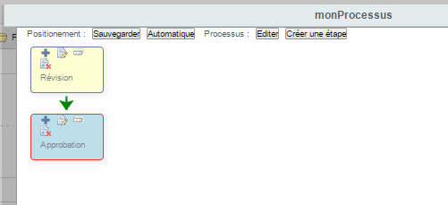
Création de l'étape de correction¶
Action¶
-
Cliquer sur l'icône de duplication de l'étape 'Révision'
-
Dans le formulaire réduit qui s'affiche, entrer les valeurs pour les propriétés de l'ongle 'Fiche d'identité':
-
'Nom de l'étape' : Correction
-
'Titre' : Etape de correction
-
-
Cliquer sur l'onglet 'Aide' et entrer la valeur suivante:
- 'Aide affichée' : Un intervenant a jugé que le document nécessitait des corrections. Une fois que vous avez apporté les corrections au document, cliquer sur le bouton 'Re-Soumettre en validation' pour relancer le circuit de validation du document.
-
Cliquer sur l'onglet 'Etapes et Intervenants'
Enchaînement des étapes¶
Etape Parente de Validation¶
La duplication a automatiquement renseigné la propriété 'Etape parente de Validation' en lui associant l'étape dupliquée.
Dans notre processus, nous voulons passer de l'étape 'Révision' à l'étape 'Correction' lorsque l'intervenant souhaite demander des corrections. Donc l'étape 'Révision' n'est pas une 'Etape parente de Validation' de l'étape 'Correction'.
Par contre, nous voulons passer de l'étape 'Correction' à l'étape 'Révision' une fois que les corrections ont été apportées. Donc l'étape 'Correction' est une 'Etape parente de Validation' de l'étape 'Révision' : nous devrons donc éditer ensuite l'étape 'Révision' pour indiquer cela.
Etape Parente de Refus¶
La duplication a également automatiquement renseigné la propriété 'Etape parente de Refus' en lui associant l'étape dupliquée.
Dans le processus que nous concevons, 'Correction' est bien une 'Etape parente de Refus' de l'étape 'Révision'.
Etape de démarrage du processus¶
La duplication a également conservé les autres propriétés de l'étape 'Révision' et en particulier, la case 'Etape de démarrage du processus' est cochée.
Or, l'étape 'Correction' n'est pas une étape de démarrage du processus.
Etape abandon¶
La case à cocher 'Etape abandon' n'est pas cochée car elle ne l'est pas pour l'étape 'Révision'.
Or, l'étape 'Correction' doit pouvoir être abandonnée par le rédacteur s'il considère que les corrections demandées font que le document ne doit plus passer en circuit d'approbation.
Assignation des intervenants¶
La duplication est un moyen rapide de créer une étape en mettant à jour quelques propriétés dont certaines d'assignation.
Dans le cas de notre processus, les propriétés d'assignation dont nous avons besoin sont présentes sur le formulaire réduit de duplication.
Pour assigner un utilisateur sur cette étape, nous choisirons la personne qui a lancé le processus.
Action¶
-
Sur la propriété 'Etape parente de Validation', cliquer sur le lien 'Retirer' à droite de 'Révision'
-
Décocher la propriété 'Etape de démarrage du processus'
-
Cocher la propriété 'Etape abandon'
-
Cliquer sur l'onglet 'Etapes et Intervenants'
Note: par défaut, la duplication affecte comme intervenant la personne qui conçoit le processus.
-
Cliquer sur le bouton 'Sélectionner' de la liste 'Intervenants'
-
La fenêtre de sélection des groupes et personnes s'affiche. Dans la partie droite, l'utilisateur connecté est sélectionné. Cliquer sur la croix à sa droite pour le retirer de la liste.
-
Cliquer sur le bouton 'Ok' de la liste de sélection
-
Cocher la propriété 'Assigne Acteur initial'
-
Cliquer sur le bouton 'Enregistrer'
L'étape apparaît avec les données initiales de la duplication (nom 'Copie de Révision' et lien vert de Validation venant de l'étape 'Révision') afin de montrer qu'il s'agit d'une duplication d'étape. Si vous ré-éditer le formulaire et enregistrer, cette information de duplication disparaît et l'étape porte le nom modifié et l'enchaînement d'étape est correct.
-
Cliquer sur l'icône d'édition de l'étape 'Copie de Révision'
-
Cliquer sur le bouton 'Enregistrer'
L'étape 'Correction' apparaît sur le modeleur web de processus :
-
le lien rouge indique que l'intervenant fait passer le processus de l'étape 'Révision' à l'étape 'Correction' en cliquant sur le bouton 'Refuser',
-
le contour rouge indique que l'intervenant (qui est l'acteur initial ayant lancé le processus) de l'étape 'Correction' peut décider d'abandonner le processus.
-
Déplacer les étapes par simple glisser/déplacer des boites pour mieux les afficher.
-
Cliquer sur le bouton 'Sauvegarder' à droite de 'Positionnement' puis sur 'Ok'
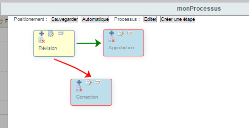
Finalisation du processus¶
Pour finaliser le processus, il ne reste plus qu'à :
-
indiquer que l'intervenant de l'étape 'Correction' doit après corrections du document re-soumettre le document dans le circuit en re-passant par l'étape de 'Révision',
-
indiquer que l'intervenant de l'étape 'Approbation' doit pouvoir demander des corrections sur le document en refusant et passant par l'étape de 'Révision',
-
adapter la sémantique de quelques libellés d'étape,
-
activer le service de demande d'avis sur l'étape d'approbation.
Action Processus¶
Pour le comportement des services, vérifions d'abord les valeurs par défaut.
- Cliquer sur le bouton 'Editer' à droite de 'Processus :'
Le formulaire d'édition du processus s'affiche.
-
Cliquer sur l'onglet 'Comportement par défaut des services'
-
Vérifier que les seuls services actifs sont 'Notification', 'Délégation', 'Accusé de réception' et 'Demande de modification'; si besoin décocher les autres.
-
Cliquer sur le bouton 'Enregistrer'
Action Etape Révision¶
-
Cliquer sur l'icône d'édition de l'étape 'Révision'
-
Cliquer sur l'onglet 'Etapes et Intervenants'
-
Pour indiquer que l'intervenant de l'étape 'Correction' peut relancer le circuit après correction, sélectionner 'Correction' dans la liste 'Etape parente de Validation'
-
Pour adapter la sémantique à de la révision, Cliquer sur l'onglet 'Libellé des champs'
-
Changer le texte de la propriété 'Libellé de validation' en 'Document révisé'
-
Cliquer sur le bouton 'Enregistrer'
Un lien vert de l'étape 'Correction' vers l'étape 'Révision' apparaît sur le modeleur web de processus.
Action Etape Correction¶
-
Cliquer sur l'icône d'édition de l'étape 'Correction'
-
Cliquer sur l'onglet 'Etapes et Intervenants'
-
Pour indiquer que l'intervenant de l'étape 'Approbation' peut demander des corrections à l'acteur initial, sélectionner 'Approbation' dans la liste 'Etape parente de Refus'
-
Pour adapter la sémantique à une re-soumission en approbation, cliquer sur l'onglet 'Libellé des champs'
-
Changer le texte de la propriété 'Libellé de validation' en 'Re-soumettre'
-
Cliquer sur le bouton 'Enregistrer'
Un lien rouge de l'étape 'Approbation' vers l'étape 'Correction' apparaît sur le modeleur web de processus.
Action Etape Approbation¶
-
Cliquer sur l'icône d'édition de l'étape 'Approbation'
-
Cliquer sur l'onglet 'Comportement des services'
-
Pour indiquer que l'intervenant peut demander un avis, sélectionner la valeur 'Oui' dans la liste 'Demande d'avis'
-
Cliquer sur le bouton 'Enregistrer'
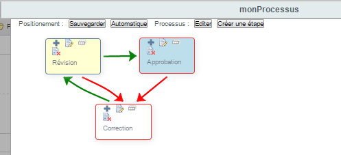
- Cliquer sur la croix en haut à droite de la fenêtre du modeleur pour en sortir ou cliquer sur le bouton 'Annuler' en bas.
Le processus est réalisé et sa conception nous a permis de balayer toutes les actions et propriétés des différents éléments le constituant.
Au niveau du modeleur web, il reste à préciser que
-
le bouton 'Automatique' à droite 'Positionnement' propose un positionnement automatique des étapes dans le modeleur. S'il ne vous convient pas en termes de lisibilité, utiliser le bouton 'Sauvegarder' après avoir ajuster le positionnement par glisser/déposer.
-
lorsque vous créer une étape, elle est positionnée par défaut en haut à gauche: faites un glisser/déposer et n'oublier pas de sauvegarder tout de suite (ATTENTION: si vous ne sauvegardez pas le repositionnement, tout action suivante de création, édition ou autre, repositionnera les boites telles qu'elles étaient avant l'action).
-
lorsque vous changer le nom d'une étape, l'étape est repositionnée en haut et à gauche car la sauvegarde des positions des étapes est faite par rapport au nom; un nom d'étape qui n'est pas dans la sauvegarde des positions met automatiquement l'étape en haut à gauche. Il est alors nécessaire de déplacer l'étape et de re-cliquer sur le bouton 'Sauvegarder'.
- si une erreur survient quand vous visualisez graphiquement les processus avec l'action 'Afficher le processus', il s'agit de corruption de la position des nœuds du graphe; dans ce cas recharger la page en passant le paramètre 'includesPositions=false' pour ne pas prendre en compte la position des nœuds puis cliquer sur le bouton 'Sauvegarder' pour sauvegarder la bonne position des nœuds. Exemple: http://localhost:8080/share/page/diagram?edition=false&processus=workspace://SpacesStore/13c82074-f24c-422f-8e5e-cee42cee63b8&includesPositions=false
Documentation des processus¶
Introduction¶
Dans le cadre d'un projet informatique, il est important de partager des spécifications sur lesquelles tous les acteurs (des équipes clientes et fournisseurs) se mettent d'accord au niveau de la couverture fonctionnelle, technique et administrative.
La description de processus documentaire doit faire partie des spécifications validées par ces acteurs.
Un processus documentaire peut s'avérer complexe à décrire comme à tester étant donné la combinatoire des possibilités d'intervention (3 étapes => 8 combinaisons, 4 étapes => 25 combinaisons).
C'est pourquoi nous avons opté pour une action de génération de la documentation du processus qui s'appuie sur le service d'injection de méta-données de Blue Processus.
Action de génération de la documentation du processus¶
- Positionner la souris sur le nom du processus pour afficher le menu d'action à droite et cliquer sur le bouton '+ Plus' puis sur 'Générer la documentation'.
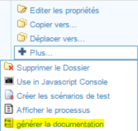
Un message d'attente vous invite à patienter pendant la génération puis un message de succès vous indique la fin de la génération.
- Cliquer sur le nom du processus pour visualiser son contenu.
Parmi les étapes du processus, le fichier bureautique 'BP_Specification_Processus_
- Cliquer sur le nom du fichier bureautique 'BP_Specification_Processus_
.docx' pour avoir un aperçu.
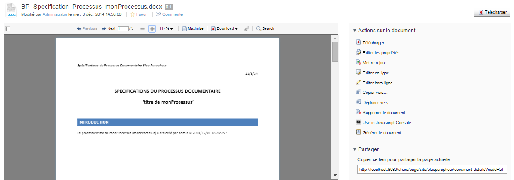
Les commandes Share vous permettent de gérer ce document comme tout contenu dans Alfresco.
L'action 'générer le document' sur le document lui-même permet de le re-générer si vous avez modifié le processus.
Structure de documentation du processus¶
Par défaut, la documentation du processus est structuré ainsi :
-
Le chapitre 'Introduction' décrivant le processus à travers ses propriétés descriptives (titre, description, créateur, date de création, ...)
-
Le chapitre 'Détail des étapes de
' contient un sous-chapitre par étape - Le sous-chapitre
contient une partie 'Description' qui donne les propriétés descriptives (titre, description, ...) de l'étape et une partie 'Résultats attendus' qui donne la propriété 'Aide affichée' de l'étape.
- Le sous-chapitre
Environnement de Test automatique de processus documentaire¶
Introduction¶
Concevoir et déployer un processus documentaire est facilité via Blue Procesuss et Alfresco mais la qualification de tout processus peut s'avérer une tâche difficile et consommatrice en temps.
En faisant abstraction des tests de service, la combinatoire de tests d'un petit processus constitué de 2 étapes de validation, d'une étape de correction avec les 3 transitions principales (validation, correction et abandon - sans la transition autre) est de 5 scénarios de test. Il passe à 9 avec une seule étape de validation supplémentaire. Il passe à plus de 15 avec une seule étape de validation supplémentaire !!!
C'est pourquoi Blue Processus intègre un environnement de tests automatiques pour réduire la difficulté et le temps de test.
Cet environnement agit en 2 phases:
-
la première permet de générer les tests
-
la seconde permet de lancer les tests et de suivre les résultats.
Génération des tests¶
Couverture de la génération¶
La génération des tests est automatique et se fait à travers une action Share sur le processus.
Les tests générés comprennent les combinaisons suivantes:
-
un scénario de validation passant par toutes les transitions de validation,
-
un scénario de validation passant par toutes les transitions de validation avec un quorum inférieur à 100 s'il existe au moins une étape en mode parallèle pour les utilisateurs,
-
un scénario pour chaque étape qui doit être approuvée pour finir le processus avec succès, ce scénario passant par une transition de refus sur cette étape suivi d'une validation,
-
un scénario par étape équivalent au précédent s'appuyant sur un quorum inférieur à 100 si l'étape est en mode parallèle pour les utilisateurs,
-
un scénario d'abandon par étape pour les étapes permettant les abandons.
Action¶
- Positionner la souris sur le nom du processus pour afficher le menu d'action à droite et cliquer sur le bouton '+ Plus' puis sur 'Créer les scénarios de test'.
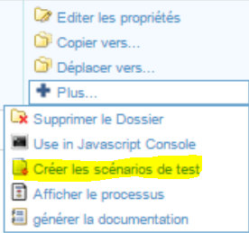
- Après quelques secondes, une fenêtre affichent les résultats de la génération de test :
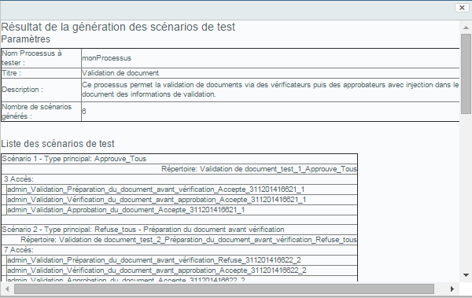
Description des scénarios générés¶
Dans le cas de 'monProcessus' créé en suivant les étape décrites dans le chapitre 'Création d'un processus documentaire', la génération produit 4 scénarios de test. Nous décrivons ci-après les 2 premiers, la logique étant toujours la même pour tous les scénarios.
Scénario 'Approuve_Tous'¶
Le premier scénario 'Scénario 1 - Type principal: Approuve_Tous' liste 2 'Accès', un accès correspondant à une action (approuver, refuser ou abandonner) d'un intervenant:
-
l'accès '<intervenant>_Validation_Révision_Accepte_<date>' indique que l'intervenant a approuvé l'étape 'Révision'
-
l'accès '<intervenant>_Validation_Approbation_Accepte_<date>' indique que l'intervenant a approuvé l'étape 'Approbation'
Ce premier scénario réalise donc le passage par les transitions de validation des 2 étapes principales et conduit donc à la fin du processus par le plus court chemin.
Scénario 'Refuse_tous - Révision'¶
Le second scénarios 'Scénario 2 - Type principal: Refuse_tous - Révision' liste 5 'Accès' :
-
l'accès '<intervenant>_Validation_Révision_Refuse_<date>' indique que l'intervenant a refusé l'étape 'Révision'
-
l'accès '<intervenant>_Validation_Correction_Accepte_<date>' indique que l'intervenant a approuvé l'étape 'Correction'
-
l'accès '<intervenant>_Validation_Révision_Accepte_<date>' indique que l'intervenant a approuvé l'étape 'Revision'
-
2 accès '<intervenant>_Validation_Approbation_Accepte_<date>' indiquent que l'intervenant a approuvé l'étape 'Approbation'
Ce second scénario réalise donc le passage par les transitions de validation des 2 étapes principales suite à un refus sur 'Révision' et conduit donc à la fin du processus par un chemin passant une fois par l'étape 'Correction'.
Note: 2 accès sont créés pour l'étape 'Approbation' alors que le scénario en réalité ne passe qu'une fois par cette étape; ceci est dû à une simplification de l'algorithmie de génération, en particulier pour les cas parallèle. Lors de l'exécution du test, les accès supplémentaires ne sont pas utilisés et n'interviennent pas dans le test.
Exécution des tests¶
Introduction¶
Une fois les tests générés, ils sont exécutables via des actions Share
-
sur le processus pour l'exécution en bloc de tous les tests,
-
sur chaque test pour une exécution par test.
Les tests sont générés dans le répertoire 'Test' du processus.
Action de génération par test¶
- Cliquer sur le nom du processus pour visualiser son contenu.
Parmi les étapes du processus, le répertoire 'Test' a été créé.
- Cliquer sur le nom du répertoire 'Test' pour visualiser son contenu.
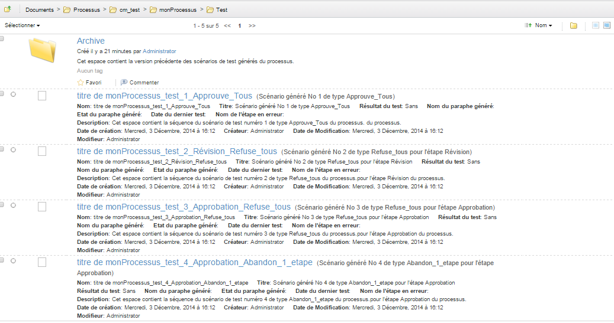
- Positionner la souris sur le nom du premier test '<nom processus>_test_1_Approuve_Tous' pour afficher le menu d'action à droite et cliquer sur le bouton '+ Plus' puis sur 'Exécuter le scénario de test'.
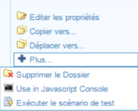
Un message d'attente vous invite à patienter. Ce message est soit suivi d'un message de succès soit d'un message vous indiquant que le test est en cours mais ne s'est pas encore terminé.
Les indicateurs suivants indique l'état du test:
-
indique que le test n'a pas démarré
-
indique que le test est en cous d'exécution
-
indique que le test est passé avec succès
-
 indique que le test est en erreur
indique que le test est en erreur -
Cliquer sur le nom du répertoire 'Test' pour visualiser son contenu.
-
Dans l'arbre 'Fichiers' de gauche, cliquer sur le répertoire 'Documents -> Processus -> Résultats de test'
Ce répertoire contient les tests en cours ou réalisés à travers des documents portant le nom des scénarios générés pour le test.
Si un test a réussi, le document portant le nom du scénario est préfixé par un tampon vert. Si un test a échoué, le document portant le nom du scénario est préfixé par un tampon rouge.
Action de génération en bloc¶
- Positionner la souris sur le nom du processus pour afficher le menu d'action à droite et cliquer sur le bouton '+ Plus' puis sur 'Exécuter les scénarios de test'.
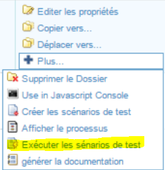
Un message d'attente du type 'Merci de patienter... L'exécution de tous les scénario de test du processus peut prendre du temps...' vous invite à patienter pendant le lancement de l'exécution de tous les tests générés sur le processus.
Ce message est suivi d'un message vous indiquant que les tests ont été lancés et sont en cours.
-
Cliquer sur le nom du processus pour visualiser son contenu.
-
Cliquer sur le nom du répertoire 'Test' pour visualiser son contenu.
Tous les tests sont préfixés par des icônes indiquant des états 'en cours', 'passé avec succès' ou 'échoué'.